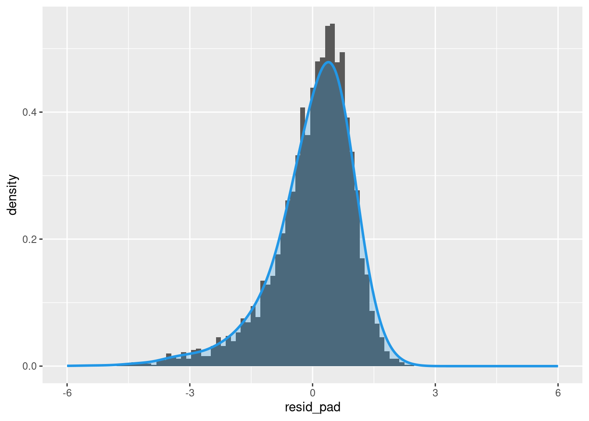
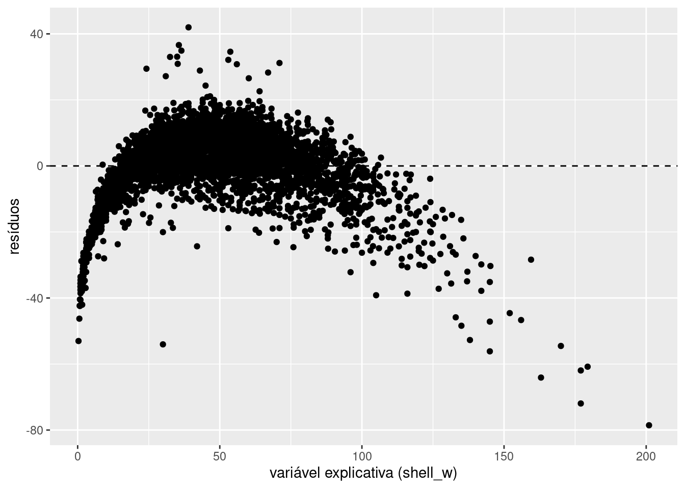

rm(list=ls())
abalone <- read_csv("data/abalone/abalone.data", col_names = FALSE)
names(abalone) <- c("sex", "length", "diameter", "height", "whole_w", "shucked_w", "viscera_w", "shell_w", "rings")GED-16: Análise de Regressão
AULA04: Prática (1o. semestre/2023)
Abalone é um tipo de molusco que vive em águas marinhas costeiras em diversas regiões do globo. A concha do abalone apresenta tamanho que varia entre 10 a 25cm e sua coloração interior iridescente nacarada é muito valorizada na confecção de jóias e ornamentos; além disso, a carne do animal é considerada uma iguaria em muitos países. Devido ao seu alto valor comercial e consequente pesca excessiva, além da degradação de seu habitat pela ação humana, diversas espécies de abalone atualmente correm risco de extinção. Existem mais de 100 espécies de abalone ao redor do mundo, das quais cerca de 15 são produzidas por meio de aquicultura. Determinar a idade do abalone de maneira acurada é importante tanto em termos comerciais (o valor comercial do abalone está associado à sua idade) bem como em termos ambientais (condições ambientais podem afetar a saúde do animal). A idade do animal pode ser determinada a partir da contagem do número de anéis na concha, utilizando um microscópio, a partir de um procedimento delicado e trabalhoso.

Os dados disponíveis no arquivo data/abalone/abalone.data foram obtidos no UCI Machine Learning Repository e são bastante utilizados na investigação de métodos de Machine Learning. Tais dados foram coletados a partir do estudo original:
Warwick J Nash, Tracy L Sellers, Simon R Talbot, Andrew J Cawthorn and Wes B Ford (1994) “The Population Biology of Abalone (Haliotis species) in Tasmania. I. Blacklip Abalone (H. rubra) from the North Coast and Islands of Bass Strait”, Sea Fisheries Division, Technical Report No. 48 (ISSN 1034-3288).
O principal objetivo do projeto era determinar a idade do molusco a partir de medidas físicas do animal mais fáceis de serem obtidas. Os dados originais foram pré-processados no sentido de remover observações faltantes e os valores das variáveis contínuas foram dividos por 200. Há um total de 4177 observações coletadas para 9 variáveis:
sex: sexo do animal (M, F, I)length: maior comprimento da concha (mm)diameter: comprimento perpendicular àlength(mm)height: comprimento da carne da concha (mm)whole_w: peso do animal (g)shucked_w: peso da carne (g)viscera_w: peso das vísceras (g)shell_w: peso da concha (g)rings: número de anéis (a idade é obtida somando 1.5)
Mais informações a respeito dos dados podem ser obtidas no arquivo data/abalone/abalone.names.
Análise Exploratória de Dados
Conduza a análise exploratória da massa de dados abalone, a fim de compreender suas características principais.
Voltaremos a utilizar essa massa de dados em atividades futuras.
Começamos identificando a estrutura dos dados:
str(abalone)spc_tbl_ [4,177 × 9] (S3: spec_tbl_df/tbl_df/tbl/data.frame)
$ sex : chr [1:4177] "M" "M" "F" "M" ...
$ length : num [1:4177] 0.455 0.35 0.53 0.44 0.33 0.425 0.53 0.545 0.475 0.55 ...
$ diameter : num [1:4177] 0.365 0.265 0.42 0.365 0.255 0.3 0.415 0.425 0.37 0.44 ...
$ height : num [1:4177] 0.095 0.09 0.135 0.125 0.08 0.095 0.15 0.125 0.125 0.15 ...
$ whole_w : num [1:4177] 0.514 0.226 0.677 0.516 0.205 ...
$ shucked_w: num [1:4177] 0.2245 0.0995 0.2565 0.2155 0.0895 ...
$ viscera_w: num [1:4177] 0.101 0.0485 0.1415 0.114 0.0395 ...
$ shell_w : num [1:4177] 0.15 0.07 0.21 0.155 0.055 0.12 0.33 0.26 0.165 0.32 ...
$ rings : num [1:4177] 15 7 9 10 7 8 20 16 9 19 ...
- attr(*, "spec")=
.. cols(
.. X1 = col_character(),
.. X2 = col_double(),
.. X3 = col_double(),
.. X4 = col_double(),
.. X5 = col_double(),
.. X6 = col_double(),
.. X7 = col_double(),
.. X8 = col_double(),
.. X9 = col_double()
.. )
- attr(*, "problems")=<externalptr> Percebemos que as variáveis já possuem nomes explicativos. Porém, percebe-se que sex está com tipo char quando deveria ser Factor. Vamos também obter a idade, a partir do número de anéis do Abalone, e retornar os valores contínuos para suas escalas originais (multiplicar por 200).
abalone <- abalone %>% mutate_at("sex", as.factor)
abalone$age <- abalone$rings + 1.5
abalone$length <- abalone$length * 200
abalone$diameter <- abalone$diameter * 200
abalone$height <- abalone$height * 200
abalone$whole_w <- abalone$whole_w * 200
abalone$shucked_w <- abalone$shucked_w * 200
abalone$viscera_w <- abalone$viscera_w * 200
abalone$shell_w <- abalone$shell_w * 200Dessa forma, temos o sumário do conjunto de dados:
summary(abalone) sex length diameter height whole_w
F:1307 Min. : 15.0 Min. : 11.00 Min. : 0.0 Min. : 0.4
I:1342 1st Qu.: 90.0 1st Qu.: 70.00 1st Qu.: 23.0 1st Qu.: 88.3
M:1528 Median :109.0 Median : 85.00 Median : 28.0 Median :159.9
Mean :104.8 Mean : 81.58 Mean : 27.9 Mean :165.7
3rd Qu.:123.0 3rd Qu.: 96.00 3rd Qu.: 33.0 3rd Qu.:230.6
Max. :163.0 Max. :130.00 Max. :226.0 Max. :565.1
shucked_w viscera_w shell_w rings
Min. : 0.20 Min. : 0.10 Min. : 0.30 Min. : 1.000
1st Qu.: 37.20 1st Qu.: 18.70 1st Qu.: 26.00 1st Qu.: 8.000
Median : 67.20 Median : 34.20 Median : 46.80 Median : 9.000
Mean : 71.87 Mean : 36.12 Mean : 47.77 Mean : 9.934
3rd Qu.:100.40 3rd Qu.: 50.60 3rd Qu.: 65.80 3rd Qu.:11.000
Max. :297.60 Max. :152.00 Max. :201.00 Max. :29.000
age
Min. : 2.50
1st Qu.: 9.50
Median :10.50
Mean :11.43
3rd Qu.:12.50
Max. :30.50 Percebe-se que algumas observações possuem altura zero. Avaliando essas observações:
abalone[abalone$height==0,]# A tibble: 2 × 10
sex length diameter height whole_w shucked_w viscera_w shell_w rings age
<fct> <dbl> <dbl> <dbl> <dbl> <dbl> <dbl> <dbl> <dbl> <dbl>
1 I 86 68 0 85.6 41.3 17.2 23 8 9.5
2 I 63 46 0 26.8 11.5 5.7 70.1 6 7.5Obtemos duas observações que não fazem sentido (altura zero e pesos diferentes de zero). Podemos retirá-las do conjunto de dados.
abalone <- abalone[abalone$height!=0,]Assim, temos um sumário dos dados atualizados.
summary(abalone) sex length diameter height whole_w
F:1307 Min. : 15.0 Min. : 11.00 Min. : 2.00 Min. : 0.40
I:1340 1st Qu.: 90.0 1st Qu.: 70.00 1st Qu.: 23.00 1st Qu.: 88.45
M:1528 Median :109.0 Median : 85.00 Median : 28.00 Median :160.00
Mean :104.8 Mean : 81.59 Mean : 27.92 Mean :165.80
3rd Qu.:123.0 3rd Qu.: 96.00 3rd Qu.: 33.00 3rd Qu.:230.70
Max. :163.0 Max. :130.00 Max. :226.00 Max. :565.10
shucked_w viscera_w shell_w rings
Min. : 0.20 Min. : 0.10 Min. : 0.30 Min. : 1.000
1st Qu.: 37.25 1st Qu.: 18.70 1st Qu.: 26.00 1st Qu.: 8.000
Median : 67.20 Median : 34.20 Median : 46.80 Median : 9.000
Mean : 71.90 Mean : 36.13 Mean : 47.77 Mean : 9.935
3rd Qu.:100.40 3rd Qu.: 50.60 3rd Qu.: 65.75 3rd Qu.:11.000
Max. :297.60 Max. :152.00 Max. :201.00 Max. :29.000
age
Min. : 2.50
1st Qu.: 9.50
Median :10.50
Mean :11.44
3rd Qu.:12.50
Max. :30.50 Dado o sumário, analisaremos agora a distribuição de algumas das grandezas de interesse no conjunto de dados. Começaremos pela idade dos Abalones, a partir da qual pode ser construído o histograma abaixo, juntamente com a sua curva de densidade estimada. Pela análise destes, nota-se que há um grande número de Abalones com uma idade próxima a 10 anos, com os mais velhos podendo ter até próximo de 30 anos.
# Histograma de `age`
ggplot(abalone, aes(x = age)) +
geom_histogram(aes(y = after_stat(density))) +
# adiciona linha de densidade estimada (suavização)
geom_density(lwd = 1, colour = 4,
fill = 4, alpha = 0.25, bw = 0.6) +
# adiciona dispersão unidimensional de `age`
geom_rug(alpha = 0.5)Pode-se, também, construir um conjunto de gráficos para analisar a relação entre cada uma das características do conjunto de dados. Nota-se, entretanto, que esse conjunto não conta com os valores de correlação das variáveis.
plot(abalone[,-c(9,9)])Dessa maneira, pode-se, com base na figura anterior, construir a próxima, que conta com os valores de correlação entre as diferentes variáveis, bem como gráficos mais informativos relacionando o sexo dos Abalones com as suas outras características.
library(GGally)
ggpairs(abalone[,-c(9,9)])Com base nesse apanhado geral de gráficos, pode-se realizar uma análise focada nas relações mais interessantes. Um desses casos consiste em comparar o valor do peso total do Abalone com os diferentes valores de pesos registrados posteriormente (whole, shucked, viscera e shell). Como pode-se constatar no conjunto de observações abaixo, a soma dos diferentes valores de peso nem sempre resulta no peso total registrado.
abalone[c(1,2,3),]# A tibble: 3 × 10
sex length diameter height whole_w shucked_w viscera_w shell_w rings age
<fct> <dbl> <dbl> <dbl> <dbl> <dbl> <dbl> <dbl> <dbl> <dbl>
1 M 91 73 19 103. 44.9 20.2 30 15 16.5
2 M 70 53 18 45.1 19.9 9.7 14 7 8.5
3 F 106 84 27 135. 51.3 28.3 42 9 10.5Assim, pode-se gerar o gráfico da variável whole_w versus a soma das variáveis shucked_w, viscera_w e shell_w. Bem como o valor de correlação das duas grandezas obtidas. Por fim, nota-se que este último é de aproximadamente 99.51%, um valor bastante alto.
abalone$sum_w <- abalone$shucked_w + abalone$viscera_w + abalone$shell_w
plot(abalone$whole_w, abalone$sum_w) cor(abalone$whole_w, abalone$sum_w)Podemos também analisar a distribuição da idade dos Abalones, o que é feito abaixo, através da geração de um boxplot. Nota-se, através deste, que 50% dos Abalones encontram-se na faixa entre 9 e 13 anos de idade. Além disso, existem vários outliers com idades superiores a 18 anos de idade.
# Boxplot de `age`
ggplot(abalone, aes(x = age, y = "")) +
# adiciona barras de erros
geom_errorbar(stat = "boxplot", width = 0.1) +
# adiciona boxplot
geom_boxplot () +
# adiciona dispersão unidimensional de `age`
geom_rug(alpha = 0.5) +
# adiciona rótulo aos eixos
labs(y = "", x = "age")
Pode-se também realizar a análise da distribuição de idades conforme o sexo do Abalone, para determinar se há uma tendência dos machos ou fêmeas terem uma expectativa de vida maior. Para tal, geram-se, novamente, boxplots da idade para cada um dos sexos. Não há grandes diferenças na distribuição de idades de machos e fêmeas. Nota-se, porém, que a grande maioria dos indivíduos de sexo não identificado são mais jovens do que os demais. Isso pode ser uma evidência de se existir uma dificuldade na identificação do sexo do Abalone quando este é mais jovem, sendo esta tarefa possivelmente mais fácil conforme estes envelhecem.
# Boxplots
ggplot(abalone, aes(x = age, y = sex)) +
geom_boxplot()Ainda com base nos gráficos de relação entre as características, podemos analisar mais a fundo a relação entre o tamanho e o peso dos abalones. Tomando as variáveis whole_w e diameter, podemos percaber uma grande correlação entre essas variáveis.
ggplot(abalone)+
geom_point(aes(x=whole_w, y = diameter))cor(abalone$whole_w, abalone$diameter)Podemos também hipotetizar que os abalones tem densidade aproximadamente constante. Assim, analisando o gráfico entre whole_w versus height*diameter^2, encontramos um gráfico que lembra uma reta. Também podemos perceber que encontra-se uma correlação ainda maior que a do caso anterior.
ggplot(abalone)+
geom_point(aes(x=whole_w, y = height*diameter**2))cor(abalone$whole_w, abalone$length*abalone$diameter**2)Podemos hipotetizar também que abalones mais velhos sejam mais pesados. Ainda que exista alguma relação entre essas variáveis, parece que ela é mais forte quando os abalones são mais novos, porém quanto mais velhos eles ficam, mais dispersos ficam os pesos. Percebe-se uma correlação significativamente menor entre essas variáveis se comparados aos casos anteriormente analisados.
ggplot(abalone)+
geom_point(aes(x=whole_w, y = age))cor(abalone$whole_w, abalone$age)Análise de Regressão
- Assuma que um modelo de regressão linear simples é adequado para modelar a relação da variável de resposta
lengtha cada uma das variáveis explicativasdiameter,shucked_w,shell_werings.
- Construa um modelo de regressão para cada um desses pares de variáveis;
- Construa gráficos de dispersão (separados) com as retas de regressão ajustadas para cada caso;
- Calcule o MSE para cada modelo. Que variável explicativa produz menor variabilidade em torno da reta de regressão ajustada?
- Utilizando R2 como critério, qual das variáveis explicativas contribui para a maior redução na variabilidade da resposta
length?
- Para cada nível da variável
sex, construa um modelo de regressão para a variável de respostalengthem função dediameter. Assuma que o modelo de 1a. ordem é adequado para modelar essas relações.
- Obtenha os modelos de regressão ajustados.
- As funções de regressão estimadas são semelhantes para todos os níveis da variável
sex? Discuta. - Calcule o MSE para cada nível da variável
sex. A variabilidade em torno da reta de regressão ajustada é semelhante para todos os níveis?
- Construa intervalos de confiança 95% para o coeficiente angular da reta de regressão para cada nível da variável
sex. As retas de regressão para diferentes níveis parecem ter mesma inclinação? O que se pode concluir?
- Construa intervalos de confiança para a resposta esperada correspondendo a
diameter = 90, para cada nível da variávelsex. O que se pode concluir?
- Construa intervalos de previsão para um novo animal de cada sexo que tenha
diameter = 90. O que se pode concluir?
- Para cada nível da variável
sex, construa um modelo de regressão para a variável de respostalengthem função deshell_w. Assuma que o modelo de 1a. ordem é adequado para modelar essas relações.
- Obtenha os modelos de regressão ajustados.
- As funções de regressão estimadas são semelhantes para todos os níveis da variável
sex? Discuta. - Calcule o MSE para cada nível da variável
sex. A variabilidade em torno da reta de regressão ajustada é semelhante para todos os níveis?
- Construa intervalos de confiança 95% para o coeficiente angular da reta de regressão para cada nível da variável
sex. As retas de regressão para diferentes níveis parecem ter mesma inclinação? O que se pode concluir?
- Construa intervalos de confiança para a resposta esperada correspondendo a
shell_w = 50, para cada nível da variávelsex. O que se pode concluir? - Faz sentido aplicar alguma transformação à variável explicativa? Em caso positivo, replique os itens anteriores para um modelo para a variável explicativa transformada.
Primeira Etapa
Primeiramente, faremos essa etapa para a variável explicativa diameter, descrevendo o processo conforme ele acontece. Posteriormente, ele será repetido para as demais. Começamos criando o modelo de regressão linear simples relacionando-a com a variável de resposta length.
# Construindo o modelo de regressao linear simples relacionando length e diameter
lm_diameter <- lm(length ~ diameter, data = abalone)
lm_diameter
Call:
lm(formula = length ~ diameter, data = abalone)
Coefficients:
(Intercept) diameter
7.384 1.194 Percebe-se que os coeficientes do modelo são ambos não nulos. Como nenhum abalone tem diameter = 0, o valor do intercepto não tem significado prática. Geramos o gráfico de dispersão para avaliar o modelo.
# Gera o grafico de dispersao
ggplot(abalone, aes(x = diameter, y = length)) + geom_point() + geom_smooth(method = lm, se = FALSE)Percebe-se que a reta de regressão parece ser adequada à distribuição dos dados. Parece existir uma clara relação linear entre length e diameter.
Agora, podemos calcular o MSE para a variável analisada. Analisaremos qual modelo gera a menor variabilidade posteriomente.
# Calculo do MSE
lm_diameter_mse <- mean(lm_diameter$residuals^2)
lm_diameter_mse[1] 15.11816Podemos também calcular o valor de \(R^2\) referente ao modelo lm_diameter. Determinaremos qual das variáveis explicativas contribui para a maior redução na variabilidade da resposta ao final do processo.
# Calculo do R^2
r2_diameter <- summary(lm_diameter)$r.squared
r2_diameter[1] 0.9737772Demais Variáveis Explicativas
Começaremos analisando shucked_w:
# Construindo o modelo de regressao linear simples relacionando length e shucked_w
lm_shucked <- lm(length ~ shucked_w, data = abalone)
lm_shucked
Call:
lm(formula = length ~ shucked_w, data = abalone)
Coefficients:
(Intercept) shucked_w
69.8927 0.4857 # Gera o grafico de dispersao
ggplot(abalone, aes(x = shucked_w, y = length)) + geom_point() + geom_smooth(method = lm, se = FALSE)A relção entre shucked_w e length não parece ser tão linear quanto diameter e length. Avaliaremos os valores de MSE e \(R^2\) para confirmar.
# Calculo do MSE
lm_shucked_mse <- mean(lm_shucked$residuals^2)
lm_shucked_mse[1] 111.7593# Calculo do R^2
r2_shucked <- summary(lm_shucked)$r.squared
r2_shucked[1] 0.8061509Seguiremos analisando a relação de shell_w com length:
# Construindo o modelo de regressao linear simples relacionando length e shell_w
lm_shell <- lm(length ~ shell_w, data = abalone)
lm_shell
Call:
lm(formula = length ~ shell_w, data = abalone)
Coefficients:
(Intercept) shell_w
67.7995 0.7749 # Gera o grafico de dispersao
ggplot(abalone, aes(x = shell_w, y = length)) + geom_point() + geom_smooth(method = lm, se = FALSE)O gráfico de dispersão tem formato similar ao anterior, provavelmente devido a uma forte correlação entre shucked_w e shell_w, como analisado na Análise Exploratória de Dados.
# Calculo do MSE
lm_shell_mse <- mean(lm_shell$residuals^2)
lm_shell_mse[1] 111.179# Calculo do R^2
r2_shell <- summary(lm_shell)$r.squared
r2_shell[1] 0.8071573De fato, os valores de MSE e \(R^2\) são muito similares ao caso anterior.
Por fim, analisaremos a relação de length e rings:
# Construindo o modelo de regressao linear simples relacionando length e rings
lm_rings <- lm(length ~ rings, data = abalone)
lm_rings
Call:
lm(formula = length ~ rings, data = abalone)
Coefficients:
(Intercept) rings
63.637 4.145 # Gera o grafico de dispersao
ggplot(abalone, aes(x = rings, y = length)) + geom_point() + geom_smooth(method = lm, se = FALSE)O gráfico de dispersão de rings versus length parece ser o “menos linear” entre os analisados. Vejamos os valores de MSE e \(R^2\) para esse caso:
# Calculo do MSE
lm_rings_mse <- mean(lm_rings$residuals^2)
lm_rings_mse[1] 398.004# Calculo do R^2
r2_rings <- summary(lm_rings)$r.squared
r2_rings[1] 0.3096526Comparação
Temos abaixo os valores de MSE e \(R^2\) agrupados em uma tablea, para cada um dos modelos gerados. Percebe-se que a variável explicativa diameter tem o menor valor de MSE, e o maior valor de \(R^2\), de maneira que, usando esse critério, ela mais contribui para a redução na variabilidade da resposta.
| Variável | diameter | shucked_w | shell_w | rings |
|---|---|---|---|---|
| MSE | 15.1181553 | 111.7592693 | 111.1790452 | 398.0040264 |
| \(R^2\) | 0.9737772 | 0.8061509 | 0.8071573 | 0.3096526 |
Segunda Etapa
Faremos agora uma análise separando os sexos dos abalones. Nessa análise, consideraremos indefinido também como um dos tipos da variável sex, uma vez que, possivelmente, existam relações entre abalones de sexo indefinido/não identificado que sejam interessantes para análise.
# Separando os abalones por sexo
abalone_m <- abalone[abalone$sex == "M",]
abalone_f <- abalone[abalone$sex == "F",]
abalone_i <- abalone[abalone$sex == "I",]Sexo Masculino
# Construindo os modelos de regressao masculino
m_lm <- lm(length ~ diameter, data = abalone_m)
m_lm$coefficients(Intercept) diameter
7.305770 1.194805 Sexo Feminino
# Construindo os modelos de regressao feminino
f_lm <- lm(length ~ diameter, data = abalone_f)
f_lm$coefficients(Intercept) diameter
8.576335 1.179181 Não Identificado
# Construindo os modelos de regressao nao identificado
i_lm <- lm(length ~ diameter, data = abalone_i)
i_lm$coefficients(Intercept) diameter
5.990772 1.218396 Podemos analisar os três modelos lado a lado:
ggplot(abalone, aes(x = diameter, y = length)) + geom_point() +
geom_smooth(method="lm", se=FALSE) + facet_wrap(~ sex)Percebe-se que as inclinações são similares, porém o intercepto feminino é maior que o masculino que, por sua vez, é maior que o não identificado.
MSE
# Calculo do MSE
m_lm_mse <- mean(m_lm$residuals^2)
f_lm_mse <- mean(f_lm$residuals^2)
i_lm_mse <- mean(i_lm$residuals^2)
# Masculino
m_lm_mse[1] 15.11766# Feminino
f_lm_mse[1] 16.91334# Não identificado
i_lm_mse[1] 13.07654Percebe-se que o MSE é menor entre os abalones não identificados, enquanto é maior para o sexo feminino.
Intervalo de Confiança do Coeficiente Angular
# Intervalo de confianca dos coeficientes angulares
# Masculino
confint.lm(m_lm, level = 0.95) 2.5 % 97.5 %
(Intercept) 6.270673 8.340868
diameter 1.183235 1.206375#Feminino
confint.lm(f_lm, level = 0.95) 2.5 % 97.5 %
(Intercept) 7.127150 10.025520
diameter 1.163437 1.194925#Não identificadp
confint.lm(i_lm, level = 0.95) 2.5 % 97.5 %
(Intercept) 5.246228 6.735315
diameter 1.207390 1.229402Conclui-se que, com 95% de confiança, o coeficiente angular dos indivíduos não identificados é diferente do coeficiente angular de machos e fêmeas, visto que o intervalo de confiança 95% dos não identificados se inicia em 1.21, enquanto dos machos acaba em 1.20 e das fêmeas acaba em 1.19. Da análise desses intervalos de confiança, não se pode tomar conclusões acerca da diferença entre os coeficientes angulares de machos e fêmeas com nível de cofiança de 95%.
Intervalo de Confiança para Resposta Esperada
Calcularemos o intervalo de confiança para diameter = 90 para cada valor de sex:
# Masculino
# Valor da variavel explicativa (diameter = 90)
xh <- data.frame(diameter = 90)
# Intervalo de confianca
ip <- predict.lm(m_lm, newdata = xh, interval = "confidence", level = 0.95)
ip fit lwr upr
1 114.8382 114.6414 115.035# Feminino
# Valor da variavel explicativa (diameter = 90)
xh <- data.frame(diameter = 90)
# Intervalo de confianca
ip <- predict.lm(f_lm, newdata = xh, interval = "confidence", level = 0.95)
ip fit lwr upr
1 114.7026 114.4788 114.9265# Nao identificado
# Valor da variavel explicativa (diameter = 90)
xh <- data.frame(diameter = 90)
# Intervalo de confianca
ip <- predict.lm(i_lm, newdata = xh, interval = "confidence", level = 0.95)
ip fit lwr upr
1 115.6464 115.3126 115.9803Novamente, concluímos que, para abalones não identificados, garante-se com 95% de confiança que seu intervalo de confiança que o valor da resposta média de length deve estar entre 115.31 e 115.98. O mesmo vale para indivíduos masculinos, de 114.64 a 115.032 e femininos de 114.47 a 114.92. Percebe-se aqui que a grande interseção entre os intervalos de confiança dos abalones machos e fêmeas, de tal forma que não se pode concluir com esse nível de confiança que a resposta média dos machos é maior que das fêmeas para diameter = 90.
Intervalo de Previsão
Vamos agora calcular intervalos de previsão associados a abalones de diameter= 90 para cada valor de sex:
# Masculino
# Valor da variavel explicativa (diameter = 90)
x0 <- data.frame(diameter = 90)
# Intervalo de previsão
ip <- predict.lm(m_lm, newdata = x0, interval = "prediction", level = 0.95)
ip fit lwr upr
1 114.8382 107.204 122.4724# Feminino
# Valor da variavel explicativa (diameter = 90)
x0 <- data.frame(diameter = 90)
# Intervalo de previsão
ip <- predict.lm(f_lm, newdata = x0, interval = "prediction", level = 0.95)
ip fit lwr upr
1 114.7026 106.6254 122.7799# Nao identificado
# Valor da variavel explicativa (diameter = 90)
x0 <- data.frame(diameter = 90)
# Intervalo de previsão
ip <- predict.lm(i_lm, newdata = x0, interval = "prediction", level = 0.95)
ip fit lwr upr
1 115.6464 108.5393 122.7535Observa-se que, como esperado, os intervalos de previsão são significativamente maiores que os intervalos de confiança para um mesmo valor de diameter. Dessa análise, podemos esperar que, dado um abalone de sexo masculino com diameter = 90, com 95% de confiança, seu valor de length deve estar entre 107.20 e 122.47. Para do sexo feminino com o mesmo valor de diameter, length deve estar entre 106.63 e 122.78 (95% de confiança) e para aqueles não identificáveis, de 108.54 a 122.75. Percebe-se que os intervalos de confiança são relativamente parecidos, com o intervalo dos não identificados iniciando um pouco depois dos demais e os três acabando próximos a 122.5.
Terceira Etapa
Assim como foi feito na segunda etapa, pode-se dividir o conjunto de dados em cada uma das categorias de sexo existentes, sendo elas, masculino, feminino, e não identificado. Ademais, são obtidos os modelos lineares para cada um dos casos.
# Separando os abalones por sexo
abalone_m <- abalone[abalone$sex == "M",]
abalone_f <- abalone[abalone$sex == "F",]
abalone_i <- abalone[abalone$sex == "I",]Masculino
# Construindo os modelos de regressao masculino
m_lm <- lm(length ~ shell_w, data = abalone_m)
m_lm$coefficients(Intercept) shell_w
73.7352210 0.6834597 Feminino
# Construindo os modelos de regressao feminino
f_lm <- lm(length ~ shell_w, data = abalone_f)
f_lm$coefficients(Intercept) shell_w
79.9965859 0.5930613 Não Identificado
# Construindo os modelos de regressao nao identificado
i_lm <- lm(length ~ shell_w, data = abalone_i)
i_lm$coefficients(Intercept) shell_w
55.508314 1.173876 Nota-se que as funções geradas são consideravelmente diferentes, com valores de coeficientes angular e linear distoantes. Pode-se também analisar o valor de MSE para cada um dos modelos.
MSE
# Calculo do MSE Masculino
m_lm_mse <- mean(m_lm$residuals^2)
m_lm_mse[1] 101.967# Calculo do MSE Feminino
f_lm_mse <- mean(f_lm$residuals^2)
f_lm_mse[1] 74.76817# Calculo do MSE Não Identificado
i_lm_mse <- mean(i_lm$residuals^2)
i_lm_mse[1] 78.16387Nota-se que os valores de MSE para o sexo feminino, e o não identificado, são próximos, enquanto o masculino é mais elevado que ambos. Analisaremos, então, o intervalo de confiança dos Coeficientes Angulares de cada um dos modelos gerados.
Intervalo de Confiança do Coeficiente Angular
# Intervalo de confianca dos coeficientes angulares
# Masculino
confint.lm(m_lm, level = 0.95) 2.5 % 97.5 %
(Intercept) 72.530228 74.9402140
shell_w 0.664076 0.7028434# Feminino
confint.lm(f_lm, level = 0.95) 2.5 % 97.5 %
(Intercept) 78.7737305 81.2194414
shell_w 0.5743682 0.6117545#Não identificado
confint.lm(i_lm, level = 0.95) 2.5 % 97.5 %
(Intercept) 54.649261 56.367367
shell_w 1.145899 1.201853Através da comparação entre os resultados obtidos, nota-se que o intervalo de Coeficiente Angular que contém 95% dos Abalones femininos encontra-se aproximadamente entre [0.57, 0.61], masculinos, entre [0.66, 0.70], e não identificados, entre [1.14, 1.20], de maneira que não existe interseção em nenhum dos três. Assim, pode-se afirmar, com 95% de certeza, que os coeficientes angulares de cada um dos modelos é diferente, com o feminino sendo inferior ao masculino, e este, por sua vez, ao não identificado. O mesmo acontece para os intervalos referentes aos interceptos de cada um dos modelos obtidos, mas, nesse caso, o coeficiente linear dos não identificados é inferior ao dos masculinos e este, ao dos femininos.
Intervalo de Confiança para Resposta Esperada
Pode-se gerar os intervalos de confiança para uma resposta de shell_w igual a 50, conforme foi solicitado para a análise.
# Masculino
# Valor da variavel explicativa (shell_w = 50)
xh <- data.frame(shell_w = 50)
# Intervalo de confianca
ip <- predict.lm(m_lm, newdata = xh, interval = "confidence", level = 0.95)
ip fit lwr upr
1 107.9082 107.3862 108.4302# Feminino
# Valor da variavel explicativa (shell_w = 50)
xh <- data.frame(shell_w = 50)
# Intervalo de confianca
ip <- predict.lm(f_lm, newdata = xh, interval = "confidence", level = 0.95)
ip fit lwr upr
1 109.6497 109.1414 110.1579# Nao identificado
# Valor da variavel explicativa (shell_w = 50)
xh <- data.frame(shell_w = 50)
# Intervalo de confianca
ip <- predict.lm(i_lm, newdata = xh, interval = "confidence", level = 0.95)
ip fit lwr upr
1 114.2021 113.3711 115.0331Analisando-se os cada um dos casos, nota-se que 95% dos Abalones masculinos com shell_w igual a 50 estão contidos no intervalo [107.39, 108.43], dos femininos, no intervalo [109.14, 110.16], e dos não identificados, no intervalo [113.37, 115.03]. Dessa maneira, pode-se concluir, com uma confiança de 95%, que a resposta média dos Abalones masculinos é inferior à dos femininos, que, por sua vez, é inferior ao dos não identificados.
Terceira Etapa Refeita
Primeiramente, é necessário determinar se vale a pena realizar a análise novamente, com uma transformação na variável explicativa. Para tal, pode-se gerar o gráfico relacionando a variável length a shell_w e, em seguida, o que relaciona length e a raiz cúbica de shell_w, transformação escolhida com base no fato de o peso do abalone ser uma função do produto de uma densidade média, suposta constante, e uma medida de volume, que tentaremos reproduzir como o cubo da variável length.
plot_normal <- ggplot(abalone, aes(x = shell_w, y = length)) + geom_point() + geom_smooth(method = lm, se = FALSE)
plot_cubic <- ggplot(abalone, aes(x = shell_w ^ (1/3), y = length)) + geom_point() + geom_smooth(method = lm, se = FALSE)
grid.arrange(plot_normal, plot_cubic, ncol = 2)Através da comparação de ambos os gráficos gerados, nota-se que o segundo conjunto de pontos aparenta adequar-se significativamente melhor ao formato de uma reta que o primeiro. Com base nisto, supõe-se que refazer a análise com uma transformação de variável pode valer a pena. Assim, construímos uma nova variável para o conjunto de dados utilizado, contendo a raiz cúbica de shell_w. Usaremos os mesmos nomes para as variáveis subsequentes, no intuito de realizar menos alterações no código.
abalone_m$shell_w_cubic <- abalone_m$shell_w ^ (1/3)
abalone_f$shell_w_cubic <- abalone_f$shell_w ^ (1/3)
abalone_i$shell_w_cubic <- abalone_i$shell_w ^ (1/3)Masculino
# Construindo os modelos de regressao masculino
m_lm <- lm(length ~ shell_w_cubic, data = abalone_m)
m_lm$coefficients (Intercept) shell_w_cubic
5.827319 28.590949 Feminino
# Construindo os modelos de regressao feminino
f_lm <- lm(length ~ shell_w_cubic, data = abalone_f)
f_lm$coefficients (Intercept) shell_w_cubic
9.407269 27.688948 Não Identificado
# Construindo os modelos de regressao nao identificado
i_lm <- lm(length ~ shell_w_cubic, data = abalone_i)
i_lm$coefficients (Intercept) shell_w_cubic
0.8956089 30.3911939 Primeiramente, nota-se um grande aumento no valor dos coeficientes angulares de cada um dos modelos obtidos, decorrentes da diminuição na magnitude da variável explicativa. Apesar disso, nota-se que ainda há uma diferença considerável nos coeficientes lineares de cada um destes, e que os angulares estão, a princípio, relativamente próximos. A seguir, realizaremos novamente a análise do valor de MSE.
MSE
# Calculo do MSE Masculino
m_lm_mse <- mean(m_lm$residuals^2)
m_lm_mse[1] 53.86313# Calculo do MSE Feminino
f_lm_mse <- mean(f_lm$residuals^2)
f_lm_mse[1] 50.64225# Calculo do MSE Não Identificado
i_lm_mse <- mean(i_lm$residuals^2)
i_lm_mse[1] 24.2529Primeiramente, ressalta-se a redução nos valores de MSE, quando comparados aos modelos originais, o que comprova que a transformação valeu a pena. Ademais, nota-se, nesse caso, que os valores dos Abalones masculinos e femininos são próximos, enquanto o não identificado é consideravelmente inferior. Com base nisto, pode-se supor que os abalones não identificados adequam-se melhor à relação cúbica. A liderança no valor de MSE do sexo masculino parece se manter, entretanto. A seguir, temos a análise dos intervalos de confiança dos modelos.
Intervalo de Confiança do Coeficiente Angular
# Intervalo de confianca dos coeficientes angulares
confint.lm(m_lm, level = 0.95) 2.5 % 97.5 %
(Intercept) 3.748674 7.905964
shell_w_cubic 28.041503 29.140395confint.lm(f_lm, level = 0.95) 2.5 % 97.5 %
(Intercept) 6.757365 12.05717
shell_w_cubic 27.006798 28.37110confint.lm(i_lm, level = 0.95) 2.5 % 97.5 %
(Intercept) -0.1914795 1.982697
shell_w_cubic 30.0126895 30.769698Nota-se, através da análise dos intervalos obtidos, que o Coeficiente Angular de 95% dos Abalones femininos encontra-se no intervalo [27.00, 28.37], dos masculinos no [28.04, 29.14], e dos não identificados no [30.01, 30.77]. Dessa forma, não podemos afirmar com 95% de confiança que o coeficiente angular do modelo gerado para Abalones masculinos é superior ao dos femininos. Isto, entretanto, não é o caso para Abalones não identificados, para os quais podemos afirmar, com 95% de certeza, que o coeficiente angular do modelo gerado é superior ao dos femininos e masculinos.
Diagnóstico
Para cada um dos modelos de regressão ajustados no item (1) da seção anterior, realize o diagnóstico através da análise dos resíduos e apresente um resumo de suas conclusões. O modelo de regressão linear simples clássico é adequado a alguma das situações investigadas?
Ajuste um modelo de regressão linear simples para a variável
lengthcomo função dediameterapós excluir as observações 1211 (X = 0.375 e Y = 0.185) e 4088 (X = 0.365 e Y = 0.61). Obtenha intervalos de previsão de 95% de confiança para novas observações que apresentam valores da variável explicativa iguais a 0.375 e 0.365. As observações eliminadas encontram-se nos limites dos intervalos de previsão obtidos? Discuta o significado dos resultados obtidos.Para os modelos considerando cada nível da variável
sexno item (2) da seção anterior, realize o diagnóstico através da análise dos resíduos. Todos aparentam ter mesma variância dos erros? Que conclusões é possível obter a partir da análise?
Análise dos Resíduos
Os modelos a serem analisados são lm_diameter, lm_shucked, lm_shell e lm_rings.Primeiramente será realizada a análise de lm_diameter e, posteriomente, será reproduzida para os demais. Ao final da análise de cada modelo haverá um resumo das conclusões sobre a adquação do modelo de regressão linear simples à situação investgada.
LM Diameter
Linearidade
lm_diameter <- lm(length ~ diameter, data = abalone)
# Constrói tabela com dados do modelo length ~ diameter
lm_diameter_data <- abalone %>%
# inclui coluna com valores ajustados
mutate(fitted = lm_diameter$fit) %>%
mutate(resid = lm_diameter$res)
# Gera gráficos dos resíduos:
ggplot(lm_diameter_data, aes(x = fitted, y = resid)) +
geom_point() +
geom_hline(yintercept = 0, linetype = "dashed") +
labs(y = "resíduos", x = "resposta ajustada (length)")
ggplot(lm_diameter_data, aes(x = diameter, y = resid)) +
geom_point() +
geom_hline(yintercept = 0, linetype = "dashed") +
labs(y = "resíduos", x = "variável explicativa (diameter)")A análise gráfica da distribuição dos resíduos indica linearidade entre a variável explicativa diameter e a variável length. Observa-se que ambos os gráficos de dispersão de resíduos versus variável explicativa e resíduos versus resposta ajustada parecem estar dispostos em uma faixa horizontal centrada no zero.
Homoscedasticidade
Avaliaremos o gráfico de módulo dos resíduos para avaliar a hipótese de homoscedasticidade dos erros:
# para dados transformados: resid x mpg_hat; resid x inv_hp
ggplot(lm_diameter_data, aes(x = fitted, y = abs(resid))) +
geom_point() +
geom_hline(yintercept = 0, linetype = "dashed") +
labs(y = "|resíduos|", x = "resposta ajustada (length)")
Percebe-se uma certa tendência de aumento da variância dos erros com o aumento do valor da resposta ajustada. Podemos então, realizar um teste de hipótese a cerca da constância da variância dos erros:
# Teste de Homoscedasticidade de Breusch-Pagan
# Ho: sigma^2 = cte
# Ha: sigma^2 != cte
library(lmtest)
bptest(lm_diameter)
studentized Breusch-Pagan test
data: lm_diameter
BP = 12.176, df = 1, p-value = 0.000484Observa-se que pode-se rejeitar a hipótese nula com elevado grau de certeza. Sendo assim, conclui-se que a variância não é constante. Devemos, portanto ter atenção aos intervalos de confiança dos coeficientes do modelo de regressão, visto que a hipótese da homoscedasticidade não é adequada para esse conjunto de dados. Uma transformação nas variáveis também pode ser adequada, embora isso possa causar a perda da linearidade.
Outliers
Vamos avaliar a presença de outliers, novamente, utilizando gráficos de dispersão dos resíduos, porém, desta vez, padronizados.
# Cria nova coluna na tabela para os dados do modelo mpg ~ inv_hp
lm_diameter_data <- lm_diameter_data %>%
# resíduos padronizados
mutate(resid_pad = rstandard(lm_diameter))
# Gera gráficos dos resíduos padronizados:
ggplot(lm_diameter_data, aes(x = fitted, y = resid_pad)) +
geom_point() +
geom_hline(yintercept = c(-4, -3, 0, 3, 4),
linetype = "dashed",
color = c("red", "orange", "black", "orange", "red") ) +
ylim(-6, 6) +
labs(y = "resíduos padronizados", x = "resposta ajustada (length)")
ggplot(lm_diameter_data, aes(x = diameter, y = resid_pad)) +
geom_point() +
geom_hline(yintercept = c(-4, -3, 0, 3, 4),
linetype = "dashed",
color = c("red", "orange", "black", "orange", "red") ) +
ylim(-6, 6) +
labs(y = "resíduos padronizados", x = "variável explicativa (diameter)")
Percebem-se aqui alguns outliers acima de 4 desvios padrão da média inclusive. Ainda assim, a grande maioria dos pontos possui resíduos inferiores a 3 desvios padrão.
Independência
Vamos agora avaliar a hipótese da independência dos erros utilizando o Teste de Durbin-Watson:
### Independência
# Teste de Durbin-Watson para correlação nula dos erros
# Ho: corr = 0
# Ha: corr != 0
library(lmtest)
dwtest(lm_diameter, alternative = "two.sided")
Durbin-Watson test
data: lm_diameter
DW = 1.7393, p-value < 2.2e-16
alternative hypothesis: true autocorrelation is not 0O teste rejeita a hipótese nula, indicando que os erros são correlacionados. A utilização de modelos autorregressivos pode ser adequada para a modelagem da relação das variáveis length e diameter.
Normalidade
Por fim, avaliaremos a normalidade dos erros, primeiramente a partir da análise gráfica.
### Normalidade
#| layout-ncol: 2
# Histograma dos resíduos padronizados
ggplot(lm_diameter_data, aes(x = resid_pad, y = after_stat(density))) +
geom_histogram(bins = 100) +
geom_density(lwd = 1, colour = 4,
fill = 4, alpha = 0.25, bw = 0.3) +
xlim(-6, 6)
# Gráfico de quantis
ggplot(lm_diameter_data, aes(sample = resid_pad)) +
stat_qq() + stat_qq_line() +
labs(y = "quantis amostrais", x = "quantis teóricos (dist. normal)")
O histograma apresenta certa fuga de normalidade dos erros. Isso é confirmado pela análise do gráfico de quartis que dá a entender que a ditribuição é simétrica com caudas mais longas que a distribuição normal. Podemos melhor avaliar a hipótese da normalidade dos resíduos com o Teste de Shapiro-Wilk.
# Teste de Normalidade de Shapiro-Wilk
# Ho: normal
# Ha: não-normal
shapiro.test(lm_diameter_data$resid_pad)
Shapiro-Wilk normality test
data: lm_diameter_data$resid_pad
W = 0.94025, p-value < 2.2e-16O teste rejeita a hipótese nula com elevado grau de confiança. Conclui-se então que os erros não são normalmente distribuídos. Embora esse não seja um problema tão grande quanto os previamente analisados, algumas transformações podem ajudar a corrigir o problema.
Conclusões
Para confirmar que o modelo é adequado, podemos aplicar a transformação Box-Cox e avaliar o valor de \(\lambda\):
# Transformação Box-Cox
library(MASS)
bc <- boxcox(lm(length ~ diameter, data = lm_diameter_data),
lambda = seq(-2, 2, by = 0.1), plotit = TRUE)
lambda <- bc$x[which.max(bc$y)]\(\lambda\) = 1.0707071
Obtemos um valor de \(\lambda\) próximo de um, confirmando que a regressão linear é adequada.
Nota-se que o modelo lm_diameter tem tendência linear e poucos outliers. Ainda que possa-se rejeitar as hipóteses de homoscedasticidade, de correlação nula dos erros e de normalidade, em termos práticos o modelo de regressão linear simples parece ser adequado para essa situação. Possivelmente a adição de mais variáveis explicativas e a remoção de outliers pode causar a melhoria do modelo.
LM Shucked
Seguiremos avaliando o modelo de regressão linear entre a variável explicativa shucked_w e a variável de resposta length. #### Linearidade
# Constrói tabela com dados do modelo length ~ shucked_w
lm_shucked_data <- abalone %>%
# inclui coluna com valores ajustados
mutate(fitted = lm_shucked$fit) %>%
mutate(resid = lm_shucked$res)
# Gera gráficos dos resíduos:
ggplot(lm_shucked_data, aes(x = fitted, y = resid)) +
geom_point() +
geom_hline(yintercept = 0, linetype = "dashed") +
labs(y = "resíduos", x = "resposta ajustada (length)")
ggplot(lm_shucked_data, aes(x = shucked_w, y = resid)) +
geom_point() +
geom_hline(yintercept = 0, linetype = "dashed") +
labs(y = "resíduos", x = "variável explicativa (shucked_w)")A análise gráfica da distribuição dos resíduos indica forte fuga de linearidade entre a variável explicativa shucked_w e a variável length. Observa-se que ambos os gráficos de dispersão de resíduos versus variável explicativa e resíduos versus resposta ajustada tem formato curvo, muito diferente do esperado para um bom modelo de regresão linear. Isso indica que serão necessárias ações (adição de variáveis, transformação de variáveis ou novo tipo de modelo) para tornar o modelo efetivo, caso exista alguma relação entre as variáveis.
Homoscedasticidade
Avaliaremos o gráfico de módulo dos resíduos para avaliar a hipótese de homoscedasticidade dos erros:
# para dados transformados: resid x mpg_hat; resid x inv_hp
ggplot(lm_shucked_data, aes(x = fitted, y = abs(resid))) +
geom_point() +
geom_hline(yintercept = 0, linetype = "dashed") +
labs(y = "|resíduos|", x = "resposta ajustada (length)")Percebe-se uma tendência de maiores módulos de resíduos para os dois extremos dos valores de resposta ajustada. Podemos avaliar a hipótese de variância homscedasticidade com o teste de Breusch-Pagan:
# Teste de Homoscedasticidade de Breusch-Pagan
# Ho: sigma^2 = cte
# Ha: sigma^2 != cte
library(lmtest)
bptest(lm_shucked)
studentized Breusch-Pagan test
data: lm_shucked
BP = 5.0992, df = 1, p-value = 0.02394O teste aponta que temos uma probabilidade de 2,4% de errar ao rejeitar a hipótese nula. Assim, podemos rejeitá-la com mais de 95% de confiança, levando-nos a aceitar a hipótese alternativa de que os erros não tem variância constante.
Outliers
Vamos avaliar a presença de outliers utilizando gráficos de dispersão dos resíduos padronizados.
# Cria nova coluna na tabela para os dados do modelo mpg ~ inv_hp
lm_shucked_data <- lm_shucked_data %>%
# resíduos padronizados
mutate(resid_pad = rstandard(lm_shucked))
# Gera gráficos dos resíduos padronizados:
ggplot(lm_shucked_data, aes(x = fitted, y = resid_pad)) +
geom_point() +
geom_hline(yintercept = c(-4, -3, 0, 3, 4),
linetype = "dashed",
color = c("red", "orange", "black", "orange", "red") ) +
ylim(-6, 6) +
labs(y = "resíduos padronizados", x = "resposta ajustada (length)")
ggplot(lm_shucked_data, aes(x = shucked_w, y = resid_pad)) +
geom_point() +
geom_hline(yintercept = c(-4, -3, 0, 3, 4),
linetype = "dashed",
color = c("red", "orange", "black", "orange", "red") ) +
ylim(-6, 6) +
labs(y = "resíduos padronizados", x = "variável explicativa (shucked_w)")
Percebem-se aqui poucos outliers acima de 4 desvios padrão, sendo todos estes na parte inferior do gráfico. Em geral, os pontos estão localizados próximos da média, tendo dispersões maiores para os extremos da variável explicativa.
Independência
Vamos agora avaliar a hipótese da independência dos erros utilizando o Teste de Durbin-Watson:
# Teste de Durbin-Watson para correlação nula dos erros
# Ho: corr = 0
# Ha: corr != 0
library(lmtest)
dwtest(lm_shucked, alternative = "two.sided")
Durbin-Watson test
data: lm_shucked
DW = 1.1447, p-value < 2.2e-16
alternative hypothesis: true autocorrelation is not 0O teste rejeita a hipótese nula, indicando que os erros são correlacionados. Talvez a utilização de modelos autorregressivos pode ajudar na modelagem entre as variáveis length e shucked_w e resolver outros problemas.
Normalidade
Por fim, avaliaremos a normalidade dos erros, primeiramente a partir da análise gráfica.
# Histograma dos resíduos padronizados
ggplot(lm_shucked_data, aes(x = resid_pad, y = after_stat(density))) +
geom_histogram(bins = 100) +
geom_density(lwd = 1, colour = 4,
fill = 4, alpha = 0.25, bw = 0.3) +
xlim(-6, 6)
# Gráfico de quantis
ggplot(lm_shucked_data, aes(sample = resid_pad)) +
stat_qq() + stat_qq_line() +
labs(y = "quantis amostrais", x = "quantis teóricos (dist. normal)")
O histograma apresenta fuga de normalidade, principalmente para a cauda esquerda. Isso é confirmado pelo gráfico de quartis, que mostra um forte desvio de normalidade na esquerda, indicando uma cauda esquerda muito mais alargada do que curvas normais.
# Teste de Normalidade de Shapiro-Wilk
# Ho: normal
# Ha: não-normal
shapiro.test(lm_shucked_data$resid_pad)
Shapiro-Wilk normality test
data: lm_shucked_data$resid_pad
W = 0.92055, p-value < 2.2e-16O teste rejeita a hipótese nula com elevado grau de confiança. Conclui-se então que os erros não são normalmente distribuídos.
Conclusões
Nota-se que o modelo lm_shucked não tem tendência linear e é possível rejeitar as hipóteses de homoscedasticidade, de correlação nula dos erros e de normalidade. A utilização de uma regressão linear simples não parece ser adequada para essa situação, visto que ele não atende muito bem nenhum critério, especialmente o de linearidade. Possivelmente será necessário transformar uma das variáveis para que o modelo de refressão simples seja adequado.
LM Shell
Avaliaremos agora o modelo de regressão linear entre a variável explicativa shell_w e a variável de resposta length.
Linearidade
# Constrói tabela com dados do modelo length ~ shell_w
lm_shell_data <- abalone %>%
# inclui coluna com valores ajustados
mutate(fitted = lm_shell$fit) %>%
mutate(resid = lm_shell$res)
# Gera gráficos dos resíduos:
ggplot(lm_shell_data, aes(x = fitted, y = resid)) +
geom_point() +
geom_hline(yintercept = 0, linetype = "dashed") +
labs(y = "resíduos", x = "resposta ajustada (length)")
ggplot(lm_shell_data, aes(x = shell_w, y = resid)) +
geom_point() +
geom_hline(yintercept = 0, linetype = "dashed") +
labs(y = "resíduos", x = "variável explicativa (shell_w)")
Como as variáveis shell_w e shucked_w são fortemente correlacionadas, espera-se que as análise sejam semelhantes para o diagnóstico de modelo. De fato, para a linearidade, os mesmos comentários da seção anterior são válidos, havendo um forte desvio de linearidade.
Homoscedasticidade
Seguiremos avaliando o gráfico de módulo dos resíduos para avaliar a hipótese de homoscedasticidade dos erros:
# para dados transformados: resid x mpg_hat; resid x inv_hp
ggplot(lm_shell_data, aes(x = fitted, y = abs(resid))) +
geom_point() +
geom_hline(yintercept = 0, linetype = "dashed") +
labs(y = "|resíduos|", x = "resposta ajustada (length)")
Assim como para o modelo lm_shucked, percebe-se uma tendência de maiores módulos de resíduos para os dois extremos dos valores de resposta ajustada. Podemos avaliar a hipótese de variância homscedasticidade com o teste de Breusch-Pagan:
# Teste de Homoscedasticidade de Breusch-Pagan
# Ho: sigma^2 = cte
# Ha: sigma^2 != cte
library(lmtest)
bptest(lm_shell)
studentized Breusch-Pagan test
data: lm_shell
BP = 45.39, df = 1, p-value = 1.615e-11O teste rejeita a hipótese nula com p-valor ainda maior que no caso anterior. Podemos afirmar que os erros não tem variância constante com alta confiança.
Outliers
Vamos avaliar a presença de outliers utilizando gráficos de dispersão dos resíduos padronizados.
# Cria nova coluna na tabela para os dados do modelo mpg ~ inv_hp
lm_shell_data <- lm_shell_data %>%
# resíduos padronizados
mutate(resid_pad = rstandard(lm_shell))
# Gera gráficos dos resíduos padronizados:
ggplot(lm_shell_data, aes(x = fitted, y = resid_pad)) +
geom_point() +
geom_hline(yintercept = c(-4, -3, 0, 3, 4),
linetype = "dashed",
color = c("red", "orange", "black", "orange", "red") ) +
ylim(-6, 6) +
labs(y = "resíduos padronizados", x = "resposta ajustada (length)")
ggplot(lm_shell_data, aes(x = shell_w, y = resid_pad)) +
geom_point() +
geom_hline(yintercept = c(-4, -3, 0, 3, 4),
linetype = "dashed",
color = c("red", "orange", "black", "orange", "red") ) +
ylim(-6, 6) +
labs(y = "resíduos padronizados", x = "variável explicativa (shell_w)")Poucos outliers são identificados. Assim como no caso anterior, a maioria está na parte inferior do gráfico.
Independência
Teste de Durbin-Watson:
# Teste de Durbin-Watson para correlação nula dos erros
# Ho: corr = 0
# Ha: corr != 0
library(lmtest)
dwtest(lm_shell, alternative = "two.sided")
Durbin-Watson test
data: lm_shell
DW = 1.0867, p-value < 2.2e-16
alternative hypothesis: true autocorrelation is not 0O teste rejeita a hipótese nula, indicando que os erros são correlacionados, como era esperado dado a similaridae com o caso anterior.
Normalidade
Avaliaremos a normalidade dos erros, primeiramente a partir da análise gráfica.
# Histograma dos resíduos padronizados
ggplot(lm_shell_data, aes(x = resid_pad, y = after_stat(density))) +
geom_histogram(bins = 100) +
geom_density(lwd = 1, colour = 4,
fill = 4, alpha = 0.25, bw = 0.3) +
xlim(-6, 6)
# Gráfico de quantis
ggplot(lm_shell_data, aes(sample = resid_pad)) +
stat_qq() + stat_qq_line() +
labs(y = "quantis amostrais", x = "quantis teóricos (dist. normal)")Temos uma análise muito similar ao caso anterior. Existe um desvio de normalidade, principalmente na cauda esquerda.
# Teste de Normalidade de Shapiro-Wilk
# Ho: normal
# Ha: não-normal
shapiro.test(lm_shell_data$resid_pad)
Shapiro-Wilk normality test
data: lm_shell_data$resid_pad
W = 0.92, p-value < 2.2e-16O teste rejeita a hipótese nula com elevado grau de confiança. Conclui-se então que os erros não são normalmente distribuídos.
Conclusões
Relembremos a correlação entre shucked_w e shell_w:
cor(abalone$shucked_w, abalone$shell_w)[1] 0.8831292Devido ao alto grau de correlação entre as variáveis, os modelos lm_shucked e lm_shell possuem problemas muito similares. Ambos não são pouco lineares e não satisfazem as hipóteses de homoscedasticidade, independência e normalidade dos erros. Assim, lm_shell também não é adequado para a situação.
LM Rings
Avaliaremos agora o modelo de regressão linear entre a variável explicativa rings e a variável de resposta length.
Linearidade
# Constrói tabela com dados do modelo length ~ rings
lm_rings_data <- abalone %>%
# inclui coluna com valores ajustados
mutate(fitted = lm_rings$fit) %>%
mutate(resid = lm_rings$res)
# Gera gráficos dos resíduos:
ggplot(lm_rings_data, aes(x = fitted, y = resid)) +
geom_point() +
geom_hline(yintercept = 0, linetype = "dashed") +
labs(y = "resíduos", x = "resposta ajustada (length)")
ggplot(lm_rings_data, aes(x = rings, y = resid)) +
geom_point() +
geom_hline(yintercept = 0, linetype = "dashed") +
labs(y = "resíduos", x = "variável explicativa (rings)")
Percebe-se que muitos erros estão relativamente distantes da média, além de existir uma certa curva com resíduos maiores no centro. Não se pode concluir que o modelo é linear.
Homoscedasticidade
Seguiremos avaliando o gráfico de módulo dos resíduos para avaliar a hipótese de homoscedasticidade dos erros:
# para dados transformados: resid x mpg_hat; resid x inv_hp
ggplot(lm_rings_data, aes(x = fitted, y = abs(resid))) +
geom_point() +
geom_hline(yintercept = 0, linetype = "dashed") +
labs(y = "|resíduos|", x = "resposta ajustada (length)")Ainda que os erros pareçam ter elevada variância, a distribuição do módulo dos erros parece ter variância constante. Vamos testar a hipótese:
# Teste de Homoscedasticidade de Breusch-Pagan
# Ho: sigma^2 = cte
# Ha: sigma^2 != cte
library(lmtest)
bptest(lm_rings)
studentized Breusch-Pagan test
data: lm_rings
BP = 0.32585, df = 1, p-value = 0.5681O teste não rejeita a hipótese nula. Assim, assumimos que a variância dos erros é constante.
Outliers
Vamos avaliar a presença de outliers utilizando gráficos de dispersão dos resíduos padronizados.
# Cria nova coluna na tabela para os dados do modelo mpg ~ inv_hp
lm_rings_data <- lm_rings_data %>%
# resíduos padronizados
mutate(resid_pad = rstandard(lm_rings))
# Gera gráficos dos resíduos padronizados:
ggplot(lm_rings_data, aes(x = fitted, y = resid_pad)) +
geom_point() +
geom_hline(yintercept = c(-4, -3, 0, 3, 4),
linetype = "dashed",
color = c("red", "orange", "black", "orange", "red") ) +
ylim(-6, 6) +
labs(y = "resíduos padronizados", x = "resposta ajustada (length)")
ggplot(lm_rings_data, aes(x = rings, y = resid_pad)) +
geom_point() +
geom_hline(yintercept = c(-4, -3, 0, 3, 4),
linetype = "dashed",
color = c("red", "orange", "black", "orange", "red") ) +
ylim(-6, 6) +
labs(y = "resíduos padronizados", x = "variável explicativa (rings)")Entre todos os modelos observados, esse é o que possui menos outliers. Não há observações com resíduos maiores que 4 desvios padrão e há poucas observações com mais de 3 desvios.
Independência
Teste de Durbin-Watson:
# Teste de Durbin-Watson para correlação nula dos erros
# Ho: corr = 0
# Ha: corr != 0
library(lmtest)
dwtest(lm_rings, alternative = "two.sided")
Durbin-Watson test
data: lm_rings
DW = 0.50205, p-value < 2.2e-16
alternative hypothesis: true autocorrelation is not 0O teste rejeita a hipótese nula, indicando que os erros são correlacionados. Um modelo autorregressivo pode ser mais adequado para essas variáveis.
Normalidade
Avaliaremos a normalidade dos erros, primeiramente a partir da análise gráfica.
# Histograma dos resíduos padronizados
ggplot(lm_rings_data, aes(x = resid_pad, y = after_stat(density))) +
geom_histogram(bins = 100) +
geom_density(lwd = 1, colour = 4,
fill = 4, alpha = 0.25, bw = 0.3) +
xlim(-6, 6)
# Gráfico de quantis
ggplot(lm_rings_data, aes(sample = resid_pad)) +
stat_qq() + stat_qq_line() +
labs(y = "quantis amostrais", x = "quantis teóricos (dist. normal)")Há aqui, também, desvio de normalidade nas duas caudas.
# Teste de Normalidade de Shapiro-Wilk
# Ho: normal
# Ha: não-normal
shapiro.test(lm_rings_data$resid_pad)
Shapiro-Wilk normality test
data: lm_rings_data$resid_pad
W = 0.98786, p-value < 2.2e-16O teste rejeita a hipótese nula com elevado grau de confiança. Conclui-se então que os erros não são normalmente distribuídos.
Conclusões
Embora esse seja o único modelo que satsisfaz a homoscedasticidade, o modelo não é muito linear, uma vez que os resíduos tem variância muito grandes. O modelo não parece ser muito adequado para a situação, além de não satisfazer as hipóteses de independência e normalidade dos erros. É possível que transformações nas variáveis ajude a reduzir a variância para melhorar o modelo.
Ajuste do Modelo de Regressão com Retirada de Pontos
Seguiremos fazendo a regressão da variável de resposta length com diameter, mas, dessa vez, retirando outliers:
abalone_no_outlier <- abalone[-c(1211, 4088),]Criando o modelo
lm_diameter_no_out <- lm(length ~ diameter, data = abalone_no_outlier)
# Constrói tabela com dados do modelo length ~ diameter
lm_diameter_no_out_data <- abalone_no_outlier %>%
# inclui coluna com valores ajustados
mutate(fitted = lm_diameter_no_out$fit) %>%
mutate(resid = lm_diameter_no_out$res)
# Gera gráficos dos resíduos:
ggplot(lm_diameter_no_out_data, aes(x = fitted, y = resid)) +
geom_point() +
geom_hline(yintercept = 0, linetype = "dashed") +
labs(y = "resíduos", x = "resposta ajustada (length)")
ggplot(lm_diameter_no_out_data, aes(x = diameter, y = resid)) +
geom_point() +
geom_hline(yintercept = 0, linetype = "dashed") +
labs(y = "resíduos", x = "variável explicativa (diameter)")Percebemos que os maiores outliers foram retirados
Previsão para diameter = 75:
x0 <- data.frame(diameter = 75)
# Intervalo de previsão
ip <- predict.lm(lm_diameter_no_out, newdata = x0, interval = "prediction", level = 0.95)
ip fit lwr upr
1 96.9542 89.59391 104.3145Percebe-se que o valor Y = 37 está fora do intervalo de confiança, indicando que, de fato, tratava-se de um outlier.
Previsão para diameter = 73:
x0 <- data.frame(diameter = 73)
# Intervalo de previsão
ip <- predict.lm(lm_diameter_no_out, newdata = x0, interval = "prediction", level = 0.95)
ip fit lwr upr
1 94.56607 87.20571 101.9264Aqui, também, o valor de Y = 122 está fora do intervalo de previsão, também indicando um outlier.
Assim, percebe-se que retirar esses outliers é interessante pois evita que seus resíduos interfiram muito no valor dos coeficientes. O modelo sem outliers é observado abaixo:
ggplot(abalone_no_outlier, aes(x = diameter, y = length)) + geom_point() + geom_smooth(method = "lm", se = FALSE)Diagnóstico para Valores de sex
Primeiramente, para realizar a análise dos resíduos para cada um dos níveis da variável sex, devemos, novamente, separar o conjunto de dados em três subconjuntos correspondentes. Iremos criá-los novamente no intuito de realizar uma análise livre de interferências anteriores.
# Separando os abalones por sexo
abalone_m <- abalone[abalone$sex == "M",]
abalone_f <- abalone[abalone$sex == "F",]
abalone_i <- abalone[abalone$sex == "I",]
# Gerando os modelos de regressão length ~ diameter
m_lm <- lm(length ~ diameter, data = abalone_m)
f_lm <- lm(length ~ diameter, data = abalone_f)
i_lm <- lm(length ~ diameter, data = abalone_i)Linearidade
Novamente, iremos construir os gráficos de resíduos do modelo linear, mas, dessa vez, para cada um dos níveis da variável sex.
# Constrói tabela com dados do modelo length ~ diameter para cada nível da variável sexo
m_data <- abalone_m %>%
# inclui coluna com valores ajustados
mutate(fitted = m_lm$fit) %>%
mutate(resid = m_lm$res)
f_data <- abalone_f %>%
# inclui coluna com valores ajustados
mutate(fitted = f_lm$fit) %>%
mutate(resid = f_lm$res)
i_data <- abalone_i %>%
# inclui coluna com valores ajustados
mutate(fitted = i_lm$fit) %>%
mutate(resid = i_lm$res)
# Gera gráficos dos resíduos:
# Respostas ajustadas
ggplot(m_data, aes(x = fitted, y = resid)) +
geom_point() +
geom_hline(yintercept = 0, linetype = "dashed") +
ggtitle("Masculino: modelo length ~ diameter") +
labs(y = "resíduos", x = "resposta ajustada (length)")
ggplot(f_data, aes(x = fitted, y = resid)) +
geom_point() +
geom_hline(yintercept = 0, linetype = "dashed") +
ggtitle("Feminino: modelo length ~ diameter") +
labs(y = "resíduos", x = "resposta ajustada (length)")
ggplot(i_data, aes(x = fitted, y = resid)) +
geom_point() +
geom_hline(yintercept = 0, linetype = "dashed") +
ggtitle("Não Identificado: modelo length ~ diameter") +
labs(y = "resíduos", x = "resposta ajustada (length)")
# Variáveis explicativas
ggplot(m_data, aes(x = diameter, y = resid)) +
geom_point() +
geom_hline(yintercept = 0, linetype = "dashed") +
ggtitle("Masculino: modelo length ~ diameter") +
labs(y = "resíduos", x = "variável explicativa (diameter)")
ggplot(f_data, aes(x = diameter, y = resid)) +
geom_point() +
geom_hline(yintercept = 0, linetype = "dashed") +
ggtitle("Feminino: modelo length ~ diameter") +
labs(y = "resíduos", x = "variável explicativa (diameter)")
ggplot(i_data, aes(x = diameter, y = resid)) +
geom_point() +
geom_hline(yintercept = 0, linetype = "dashed") +
ggtitle("Não Identificado: modelo length ~ diameter") +
labs(y = "resíduos", x = "variável explicativa (diameter)")

Nota-se, através da análise dos gráficos anteriores, que os três modelos aparentam ter uma distribuição razoavelmente linear. Não se percebe a presença de curvaturas significativas na distribuição dos pontos. Ademais, constata-se que o conjunto de pontos correspondente ao nível Não Identificado da variável sex aparenta ter resíduos de módulo consideravelmente menor que os demais. Feita esta ressalva, continuaremos a análise utilizando os modelos construídos nesta etapa.
Homoscedasticidade
# Gerar gráficos com os módulos dos resíduos para cada nível
ggplot(m_data, aes(x = fitted, y = abs(resid))) +
geom_point() +
geom_hline(yintercept = 0, linetype = "dashed") +
ggtitle("Masculino: modelo length ~ diameter") +
labs(y = "|resíduos|", x = "resposta ajustada (length)")
ggplot(f_data, aes(x = fitted, y = abs(resid))) +
geom_point() +
geom_hline(yintercept = 0, linetype = "dashed") +
ggtitle("Feminino: modelo length ~ diameter") +
labs(y = "|resíduos|", x = "resposta ajustada (length)")
ggplot(i_data, aes(x = fitted, y = abs(resid))) +
geom_point() +
geom_hline(yintercept = 0, linetype = "dashed") +
ggtitle("Não Identificado: modelo length ~ diameter") +
labs(y = "|resíduos|", x = "resposta ajustada (length)")Analisando-se os gráficos de resíduos absolutos apresentados, nota-se que, a princípio, temos a presença de um “efeito cone” nos níveis Masculino e Feminino, que não está presente no nível Não Identificado.
Dessa forma, espera-se que a variância dos erros para os níveis Masculino e Feminino não seja constante, e para o Não Identificado, sim. Para determinar a veracidade desta afirmação, podemos realizar um teste.
Testes de Breusch-Pagan
Considerando \(H_0: \sigma^2=\text{cte}\), e \(H_a: \sigma^2\neq\text{cte}\), temos os seguintes valores para o teste de Breusch-Pagan, para cada um dos níveis da variável sex.
| Nível da Variável | Estatística BP | p-valor |
|---|---|---|
| Masculino | 11.8902793 | 5.642766^{-4} |
| Feminino | 12.0221497 | 5.2572032^{-4} |
| Não Identificado | 1.7639449 | 0.1841332 |
Dessa maneira, analisando os resultados, concluímos que, segundo o teste de Breusch-Pagan, a hipótese levantada anteriormente, de que a variância do nível Não Identificado é constante, enquanto a dos níveis Masculino e Feminino não é, é válida, dado que os p-valores Masculino e Feminino são inferiores a 5%, e o Não Identificado é superior.
Outliers
# Cria nova coluna na tabela para os dados do modelo length ~ diameter
m_data <- m_data %>%
# resíduos padronizados
mutate(resid_pad = rstandard(m_lm))
f_data <- f_data %>%
# resíduos padronizados
mutate(resid_pad = rstandard(f_lm))
i_data <- i_data %>%
# resíduos padronizados
mutate(resid_pad = rstandard(i_lm))
# Gráficos dos resíduos padronizados
# Resposta Ajustada
# Masculino
ggplot(m_data, aes(x = fitted, y = resid_pad)) +
geom_point() +
geom_hline(yintercept = c(-4, -3, 0, 3, 4),
linetype = "dashed",
color = c("red", "orange", "black", "orange", "red") ) +
ylim(-6, 6) +
ggtitle("Masculino: modelo length ~ diameter") +
labs(y = "resíduos padronizados", x = "resposta ajustada (length)")
# Feminino
ggplot(f_data, aes(x = fitted, y = resid_pad)) +
geom_point() +
geom_hline(yintercept = c(-4, -3, 0, 3, 4),
linetype = "dashed",
color = c("red", "orange", "black", "orange", "red") ) +
ylim(-6, 6) +
ggtitle("Feminino: modelo length ~ diameter") +
labs(y = "resíduos padronizados", x = "resposta ajustada (length)")
# Não Identificado
ggplot(i_data, aes(x = fitted, y = resid_pad)) +
geom_point() +
geom_hline(yintercept = c(-4, -3, 0, 3, 4),
linetype = "dashed",
color = c("red", "orange", "black", "orange", "red") ) +
ylim(-6, 6) +
ggtitle("Não Identificado: modelo length ~ diameter") +
labs(y = "resíduos padronizados", x = "resposta ajustada (length)")
# Variável Explicativa
# Masculino
ggplot(m_data, aes(x = diameter, y = resid_pad)) +
geom_point() +
geom_hline(yintercept = c(-4, -3, 0, 3, 4),
linetype = "dashed",
color = c("red", "orange", "black", "orange", "red") ) +
ylim(-6, 6) +
ggtitle("Masculino: modelo length ~ diameter") +
labs(y = "resíduos padronizados", x = "variável explicativa (diameter)")
ggplot(f_data, aes(x = diameter, y = resid_pad)) +
geom_point() +
geom_hline(yintercept = c(-4, -3, 0, 3, 4),
linetype = "dashed",
color = c("red", "orange", "black", "orange", "red") ) +
ylim(-6, 6) +
ggtitle("Feminino: modelo length ~ diameter") +
labs(y = "resíduos padronizados", x = "variável explicativa (diameter)")
ggplot(i_data, aes(x = diameter, y = resid_pad)) +
geom_point() +
geom_hline(yintercept = c(-4, -3, 0, 3, 4),
linetype = "dashed",
color = c("red", "orange", "black", "orange", "red") ) +
ylim(-6, 6) +
ggtitle("Não Identificado: modelo length ~ diameter") +
labs(y = "resíduos padronizados", x = "variável explicativa (diameter)")Analisando-se os pares de gráficos gerados para cada um dos níveis da variável sex, constata-se que há uma quantidade considerável de valores extremos (com módulo do resíduo padronizado superior a \(3\sigma\)).
Independência
Para a medida dessa métrica, usaremos o teste de Durbin-Watson. Os resultados para cada nível da variável sex estão agrupados na tabela abaixo.
| Nível da Variável | Estatística DW | p-valor |
|---|---|---|
| Masculino | 1.7500345 | 4.6391326^{-7} |
| Feminino | 1.7633568 | 8.6683186^{-6} |
| Não Identificado | 1.8224491 | 5.3359833^{-4} |
Observa-se que os p-valores dos três níveis da variável sex são inferiores a 5%. Dessa forma, com base no resultado do teste de Durbin-Watson, rejeitamos a hipótese nula para os três casos, o que nos leva a concluir que há evidência de correlação não nula entre os erros.
Normalidade
Para uma análise preliminar, geramos os histogramas e gráficos de quantis para cada um dos níveis da variável sex.
# Histograma dos resíduos padronizados
# Masculino
ggplot(m_data, aes(x = resid_pad, y = after_stat(density))) +
geom_histogram(bins = 40) +
# adiciona linha de densidade estimada (suavização)
geom_density(lwd = 1, colour = 4,
fill = 4, alpha = 0.25, bw = 0.6)
# Feminino
ggplot(f_data, aes(x = resid_pad, y = after_stat(density))) +
geom_histogram(bins = 40) +
# adiciona linha de densidade estimada (suavização)
geom_density(lwd = 1, colour = 4,
fill = 4, alpha = 0.25, bw = 0.6)
# Não Identificado
ggplot(i_data, aes(x = resid_pad, y = after_stat(density))) +
geom_histogram(bins = 40) +
# adiciona linha de densidade estimada (suavização)
geom_density(lwd = 1, colour = 4,
fill = 4, alpha = 0.25, bw = 0.6)
# Gráfico de quantis
# Masculino
ggplot(m_data, aes(sample = resid_pad)) +
stat_qq() + stat_qq_line() +
labs(y = "Quantis Amostrais", x = "Quantis Teóricos (dist. normal)")
# Feminino
ggplot(f_data, aes(sample = resid_pad)) +
stat_qq() + stat_qq_line() +
labs(y = "Quantis Amostrais", x = "Quantis Teóricos (dist. normal)")
# Não Identificado
ggplot(i_data, aes(sample = resid_pad)) +
stat_qq() + stat_qq_line() +
labs(y = "Quantis Amostrais", x = "Quantis Teóricos (dist. normal)")
As curvas aparentam ser um tanto concentradas para que a distribuição seja normal. Porém, para avaliar se este é o caso, realizamos o teste de normalidade de Shapiro-Wilk, cujos resultados estão agrupados na tabela abaixo.
| Nível da Variável | Estatística W | p-valor |
|---|---|---|
| Masculino | 0.9699922 | 2.6897395^{-17} |
| Feminino | 0.9838956 | 7.1207812^{-11} |
| Não Identificado | 0.8262848 | 8.3899943^{-36} |
Assim, observando os p-valores produzidos pelo teste para cada um dos níveis da variável sex, nota-se que os três casos são inferiores a 5%, o que nos leva a rejeitar a hipótese nula, e concluir que os erros não são normalmente distribuídos.
Transformação Box-Cox
library(MASS)
# Gerar gráficos box-cox
bc_m <- boxcox(lm(length ~ diameter, data = m_data),
lambda = seq(-2, 2, by = 0.1), plotit = TRUE)
bc_f <- boxcox(lm(length ~ diameter, data = f_data),
lambda = seq(-2, 2, by = 0.1), plotit = TRUE)
bc_i <- boxcox(lm(length ~ diameter, data = i_data),
lambda = seq(-2, 2, by = 0.1), plotit = TRUE)
# Gerar valores de lambda
lambda_m <- bc_m$x[which.max(bc_m$y)]
lambda_f <- bc_f$x[which.max(bc_f$y)]
lambda_i <- bc_i$x[which.max(bc_i$y)]| Nível da Variável | Valor de \(\lambda\) |
|---|---|
| Masculino | 1.030303 |
| Feminino | 1.0707071 |
| Não Identificado | 1.1111111 |
Analisando-se os valores de \(\lambda\) obtidos para cada um dos níveis da variável sex, pode-se constatar que os valores, para todos os níveis da variável sex, são bastante próximos de 1, o que implica uma relação linear. Assim, com base no procedimento Box-Cox, tem-se que não se deve ser aplicada uma transformação nos modelos obtidos, de maneira que estes permanecem como modelos lineares simples.
Conclusão
Com base nos dados obtidos anteriormente, temos que, de acordo com o resultado do testes de Breusch-Pagan, os resíduos dos níveis Masculino e Feminino da variável sex não possuem uma variância constante, mas o nível Não Determinado possui \(\sigma^2\) constante.
Ademais, a partir dos valores de \(\lambda\) obtidos durante a Transformação Box-Cox, pode-se afirmar que os modelos lineares simples utilizados para a previsão adequam-se moderadamente bem aos diferentes conjuntos de dados, referentes a cada um dos níveis da variável sex, dado que os valores são bastante próximos de \(1\).
PARTE 2: Regressão Linear Múltipla
Para os exercícios a seguir, suponha que a idade do abalone seja dada pela seguinte forma:
\[\textsf{age} = \textsf{rings} + \delta, \quad \delta \sim N(\mu = 1.5, \sigma = 0.5)\]
set.seed(16)
abalone <- abalone %>%
# cria nova variável `age`
mutate(age = rings + rnorm(n = nrow(abalone), mean = 1.5, sd = 0.5))Dois modelos foram propostos para prever a idade de um abalone (age):
Modelo I: utiliza como variáveis explicativas length, diameter e shell_w
Modelo II: utiliza como variáveis explicativas height, diameter e shell_w
Construa a matriz de gráficos de dispersão, bem como a matriz de correlação para cada modelo proposto. Interprete os resultados obtidos.
Para cada modelo, ajuste um modelo de regressão de 1a. ordem com as três variáveis explicativas consideradas. Discuta os resultados obtidos.
Realize o diagnóstico dos modelos. É possível identificar um modelo que seja mais adequado aos dados?
Para cada nível da variável
sex, construa um modelo de regressão de 1a. ordem paralengthcomo função das variáveisage,diametereshucked_weshell_w.
- Comente sobre os resultados obtidos para os modelos ajustados.
- As funções de regressão estimadas são semelhantes para os diferentes níveis da variável
sex? Discuta. - Analise os valores de MSE e \(R^2_{aj}\) para cada modelo. Essas medidas são semelhantes para os três níveis de
sex? Discuta. - Realize o diagnóstico dos modelos construídos. Interprete os gráficos e os resultados obtidos.
Modelo I
Matriz de Gráficos de Dispersão
O primeiro dos modelos tratado é o de variáveis explicativas length, diameter e shell_w. Como a variável age já foi atribuída, podemos construir a matriz de gráficos de dispersão do conjunto de dados analisado.
plot(subset(abalone, select = c(length, diameter, shell_w, age)))cor(subset(abalone, select = c(length, diameter, shell_w, age))) length diameter shell_w age
length 1.0000000 0.9868015 0.8984193 0.5485100
diameter 0.9868015 1.0000000 0.9060836 0.5672066
shell_w 0.8984193 0.9060836 1.0000000 0.6191524
age 0.5485100 0.5672066 0.6191524 1.0000000Analisando-se a matriz de correlações, nota-se que, apesar de serem superiores a 50%, os valores de correlação das variáveis explicativas com a resposta são consideravelmente baixos, com o maior dentre estes sendo o da variável shell_w.
Apesar dos baixos valores, daremos continuidade ao ajuste dos modelos de regressão de \(1^a\) Ordem com as três variáveis explicativas consideradas.
Modelo de Regressão de Primeira Ordem
# Constrói modelo de regressão linear multipla de 1a. ordem
rlm_partone <- lm(age ~ length + diameter + shell_w, data = abalone)
# variável de resposta: `age`
# variáveis explicativas: `length`, `diameter` e `shell_w`
# Resumo do modelo ajustado
summary(rlm_partone)
Call:
lm(formula = age ~ length + diameter + shell_w, data = abalone)
Residuals:
Min 1Q Median 3Q Max
-7.1644 -1.6323 -0.5094 0.9926 14.3811
Coefficients:
Estimate Std. Error t value Pr(>|t|)
(Intercept) 8.287630 0.265664 31.196 < 2e-16 ***
length -0.071508 0.010169 -7.032 2.37e-12 ***
diameter 0.089213 0.012773 6.985 3.31e-12 ***
shell_w 0.070418 0.003357 20.977 < 2e-16 ***
---
Signif. codes: 0 '***' 0.001 '**' 0.01 '*' 0.05 '.' 0.1 ' ' 1
Residual standard error: 2.55 on 4171 degrees of freedom
Multiple R-squared: 0.3908, Adjusted R-squared: 0.3903
F-statistic: 891.8 on 3 and 4171 DF, p-value: < 2.2e-16Realizaremos a análise do modelo obtido em uma seção subsequente.
Modelo II
Matriz de Gráficos de Dispersão
Daremos prosseguimento ao tratamento do modelo com variáveis explicativas length, diameter e shell_w. Como, novamente, a variável age já foi atribuída, podemos construir a matriz de gráficos de dispersão do conjunto de dados.
plot(subset(abalone, select = c(height, diameter, shell_w, age)))cor(subset(abalone, select = c(height, diameter, shell_w, age))) height diameter shell_w age
height 1.0000000 0.8342984 0.8195962 0.5509139
diameter 0.8342984 1.0000000 0.9060836 0.5672066
shell_w 0.8195962 0.9060836 1.0000000 0.6191524
age 0.5509139 0.5672066 0.6191524 1.0000000Analisando-se a matriz de correlações, nota-se que, novamente, apesar de serem superiores a 50%, os valores de correlação das variáveis explicativas com a resposta são consideravelmente baixos, com o maior dentre estes sendo o da variável shell_w.
Assim como no caso anterior, apesar dos baixos valores de correlação entre as variáveis, daremos continuidade ao ajuste dos modelos de regressão de \(1^a\) Ordem com as três variáveis explicativas consideradas.
Modelo de Regressão de Primeira Ordem
# Constrói modelo de regressão linear multipla de 1a. ordem
rlm_parttwo <- lm(age ~ height + diameter + shell_w, data = abalone)
# variável de resposta: `age`
# variáveis explicativas: `height`, `diameter` e `shell_w`
# Resumo do modelo ajustado
summary(rlm_parttwo)
Call:
lm(formula = age ~ height + diameter + shell_w, data = abalone)
Residuals:
Min 1Q Median 3Q Max
-11.6537 -1.6230 -0.5399 0.9554 15.0925
Coefficients:
Estimate Std. Error t value Pr(>|t|)
(Intercept) 7.382389 0.255703 28.871 < 2e-16 ***
height 0.056036 0.008927 6.277 3.81e-10 ***
diameter -0.006366 0.005084 -1.252 0.211
shell_w 0.062966 0.003487 18.059 < 2e-16 ***
---
Signif. codes: 0 '***' 0.001 '**' 0.01 '*' 0.05 '.' 0.1 ' ' 1
Residual standard error: 2.553 on 4171 degrees of freedom
Multiple R-squared: 0.3893, Adjusted R-squared: 0.3889
F-statistic: 886.4 on 3 and 4171 DF, p-value: < 2.2e-16Realizaremos a análise e comparação dos modelos obtidos a seguir.
Análise e Comparação dos Modelos
Primeiramente, temos que os valores das variáveis length, height e diameter, estão ambos em centímetros. Já shell_w, está em gramas.
Interpretação dos Modelos
Para o primeiro modelo ajustado, temos que, mantido um valor de comprimento e diâmetro constantes, quando aumentamos o peso da concha em 100g, deveremos ter um abalone aproximadamente 7 anos mais velho. Concomitantemente, ao aumentarmos o seu diâmetro em 100 centímetros, mantendo as demais variáveis constantes, devemos ter um abalone aproximadamente 8.9 anos mais velho. Sob condições análogas, aumentar o comprimento 100 centímetros, contrariamente, implica em um abalone aproximadamente 7.1 anos mais novo.
Analogamente, para o segundo modelo, um aumento na altura de 100 centímetros implica em um abalone aproximadamente 5.6 anos mais velho, de 100 gramas no peso da concha, 6.2 anos mais velho e, de 100 centímetros no diâmetro, 6.3 anos mais novo.
Diagnóstico dos Modelos
Primeiramente, retomamos os valores dos coeficientes de determinação de ambos os modelos ajustados, sendo eles, para o primeiro, R2 = 0.3907867 e R2_aj = 0.3903485 e, para o segundo, R2 = 0.3893329 e R2_aj = 0.3903485.
Assim, para o primeiro modelo, a inclusão das variáveis length, diameter e shell_w reduz a variação total de age em aproximadamente 39%. Ajustando para o número de variáveis explicativas no modelo tem pouco efeito no valor de R2. Assim, com base nessa variação, conclui-se que não há variáveis em excesso no modelo.
Em seguida, no segundo modelo, a inclusão de height, diameter e shell_w reduz a variação total de ageem aproximadamente 38%. Novamente, com o ajuste, não há variação significativa e, portanto, não há evidências de variáveis em excesso no modelo.
A seguir, temos os gráficos de resíduos para os dois modelos gerados até então.
# Constrói tabela com dados do modelo age ~ length + diameter + shell_w
rlm_partone_data <- abalone %>%
# inclui coluna com valores ajustados
mutate(fitted = rlm_partone$fit) %>%
mutate(resid = rlm_partone$res)
# Gera gráficos dos resíduos:
# Grafico: resid x resposta ajustada (yhat)
ggplot(rlm_partone_data, aes(x = fitted, y = resid)) +
geom_point() +
geom_hline(yintercept = 0, linetype = "dashed") +
ggtitle("Gráfico de resíduos: modelo age ~ length + diameter + shell_w") +
labs(y = "resíduos", x = "resposta ajustada (age)")
# Grafico: |resid| x resposta ajustada (yhat)
ggplot(rlm_partone_data, aes(x = fitted, y = abs(resid))) +
geom_point() +
geom_hline(yintercept = 0, linetype = "dashed") +
ggtitle("Gráfico de resíduos absolutos: modelo age ~ length + diameter + shell_w") +
labs(y = "|resíduos|", x = "resposta ajustada (age)")
# Constrói tabela com dados do modelo age ~ height + diameter + shell_w
rlm_parttwo_data <- abalone %>%
# inclui coluna com valores ajustados
mutate(fitted = rlm_parttwo$fit) %>%
mutate(resid = rlm_parttwo$res)
# Gera gráficos dos resíduos:
# Grafico: resid x resposta ajustada (yhat)
ggplot(rlm_parttwo_data, aes(x = fitted, y = resid)) +
geom_point() +
geom_hline(yintercept = 0, linetype = "dashed") +
ggtitle("Gráfico de resíduos: modelo age ~ height + diameter + shell_w") +
labs(y = "resíduos", x = "resposta ajustada (age)")
# Grafico: |resid| x resposta ajustada (yhat)
ggplot(rlm_parttwo_data, aes(x = fitted, y = abs(resid))) +
geom_point() +
geom_hline(yintercept = 0, linetype = "dashed") +
ggtitle("Gráfico de resíduos absolutos: modelo age ~ height + diameter + shell_w") +
labs(y = "|resíduos|", x = "resposta ajustada (age)")Nota-se que, para ambos os gráficos, a grande maioria dos pontos concentra-se em valores menores de age. Também observam-se claras tendências na distribuição dos resíduos para ambos os modelos, que possuem uma curvatura com concavidade para baixo. Por fim, ressalta-se apresença de alguns outliers nos extremos à direita de ambos os gráficos.
Assim, nota-se que há fortes indícios de existirem desvios sistemáticos da resposta linear em ambos os modelos.
A seguir, geram-se os gráficos de resíduos versus as diferentes variáveis dos modelos construídos.
Modelo I
# Grafico: resid x var. explic. length
ggplot(rlm_partone_data, aes(x = length, y = resid)) +
geom_point() +
geom_smooth(se=FALSE) +
geom_hline(yintercept = 0, linetype = "dashed") +
ggtitle("Gráfico de resíduos vs. length: modelo age ~ length + diameter + shell_w") +
labs(y = "resíduos", x = "variável explicativa (length)")
# Grafico: resid x var. explic. diameter
ggplot(rlm_partone_data, aes(x = diameter, y = resid)) +
geom_point() +
geom_smooth(se=FALSE) +
geom_hline(yintercept = 0, linetype = "dashed") +
ggtitle("Gráfico de resíduos vs. diameter: modelo age ~ length + diameter + shell_w") +
labs(y = "resíduos", x = "variável explicativa (diameter)")
# Grafico: resid x var. explic. shell_w
ggplot(rlm_partone_data, aes(x = shell_w, y = resid)) +
geom_point() +
geom_smooth(se=FALSE) +
geom_hline(yintercept = 0, linetype = "dashed") +
ggtitle("Gráfico de resíduos vs. shell_w: modelo age ~ length + diameter + shell_w") +
labs(y = "resíduos", x = "variável explicativa (shell_w)")
# Grafico: resid x length * diameter
ggplot(rlm_partone_data, aes(x = length*diameter, y = resid)) +
geom_point() +
geom_smooth(se=FALSE) +
geom_hline(yintercept = 0, linetype = "dashed") +
ggtitle("Gráfico de resíduos vs. (length x diameter): modelo age ~ length + diameter + shell_w") +
labs(y = "resíduos", x = "length x diameter")
# Grafico: resid x length * shell_w
ggplot(rlm_partone_data, aes(x = length*shell_w, y = resid)) +
geom_point() +
geom_smooth(se=FALSE) +
geom_hline(yintercept = 0, linetype = "dashed") +
ggtitle("Gráfico de resíduos vs. (length x shell_w): modelo age ~ length + diameter + shell_w") +
labs(y = "resíduos", x = "length x shell_w")
# Grafico: resid x diameter * shell_w
ggplot(rlm_partone_data, aes(x = diameter*shell_w, y = resid)) +
geom_point() +
geom_smooth(se=FALSE) +
geom_hline(yintercept = 0, linetype = "dashed") +
ggtitle("Gráfico de resíduos vs. (diameter x shell_w): modelo age ~ length + diameter + shell_w") +
labs(y = "resíduos", x = "diameter x shell_w")

Ao analisar os gráficos gerados, pode-se perceber uma clara tendência em todos, dado que as curva suavizada referente a massa de pontos não é próxima de uma reta no zero. Portanto, temos fortes indícios da existência de uma relação não linear entre cada uma das variáveis explicativas e a resposta.
Modelo II
# Grafico: resid x var. explic. height
ggplot(rlm_parttwo_data, aes(x = height, y = resid)) +
geom_point() +
geom_smooth(se=FALSE) +
geom_hline(yintercept = 0, linetype = "dashed") +
ggtitle("Gráfico de resíduos vs. height: modelo age ~ height + diameter + shell_w") +
labs(y = "resíduos", x = "variável explicativa (height)")
# Grafico: resid x var. explic. diameter
ggplot(rlm_parttwo_data, aes(x = diameter, y = resid)) +
geom_point() +
geom_smooth(se=FALSE) +
geom_hline(yintercept = 0, linetype = "dashed") +
ggtitle("Gráfico de resíduos vs. diameter: modelo age ~ height + diameter + shell_w") +
labs(y = "resíduos", x = "variável explicativa (diameter)")
# Grafico: resid x var. explic. shell_w
ggplot(rlm_parttwo_data, aes(x = shell_w, y = resid)) +
geom_point() +
geom_smooth(se=FALSE) +
geom_hline(yintercept = 0, linetype = "dashed") +
ggtitle("Gráfico de resíduos vs. shell_w: modelo age ~ height + diameter + shell_w") +
labs(y = "resíduos", x = "variável explicativa (shell_w)")
# Grafico: resid x height * diameter
ggplot(rlm_partone_data, aes(x = height*diameter, y = resid)) +
geom_point() +
geom_smooth(se=FALSE) +
geom_hline(yintercept = 0, linetype = "dashed") +
ggtitle("Gráfico de resíduos vs. (height x diameter): modelo age ~ height + diameter + shell_w") +
labs(y = "resíduos", x = "height x diameter")
# Grafico: resid x height * shell_w
ggplot(rlm_partone_data, aes(x = height*shell_w, y = resid)) +
geom_point() +
geom_smooth(se=FALSE) +
geom_hline(yintercept = 0, linetype = "dashed") +
ggtitle("Gráfico de resíduos vs. (height x shell_w): modelo age ~ height + diameter + shell_w") +
labs(y = "resíduos", x = "height x shell_w")
# Grafico: resid x diameter * shell_w
ggplot(rlm_partone_data, aes(x = diameter*shell_w, y = resid)) +
geom_point() +
geom_smooth(se=FALSE) +
geom_hline(yintercept = 0, linetype = "dashed") +
ggtitle("Gráfico de resíduos vs. (diameter x shell_w): modelo age ~ length + diameter + shell_w") +
labs(y = "resíduos", x = "diameter x shell_w")Novamente, assim como no primeiro modelo, constata-se, através da análise da curva suavizada referente a massa de pontos, que há fortes indícios de uma relação não linear entre a variável de resposta e as variáveis explicativas. Destaca-se também a presença de dois pontos de registros extremos no gráfico de resíduos referente a variável height, que aparecem novamente, embora de maneira menos exagerada, no gráfico de resíduos height * diameter.
Gráfico de Quantis
# Gráfico de quantis (para resíduos)
ggplot(rlm_partone_data, aes(sample = resid)) +
stat_qq() + stat_qq_line() +
labs(y = "quantis amostrais", x = "quantis teóricos (dist. normal)") +
ggtitle("Gráfico de quantis (resíduos) - Modelo 1")
# Gráfico de quantis (para resíduos semi-studentizados)
ggplot(rlm_partone_data, aes(sample = resid/sd(resid))) +
stat_qq() + stat_qq_line() +
labs(y = "quantis amostrais", x = "quantis teóricos (dist. normal)") +
ggtitle("Gráfico de quantis (resíduos padronizados) - Modelo 1")
# Gráfico de quantis (para resíduos)
ggplot(rlm_parttwo_data, aes(sample = resid)) +
stat_qq() + stat_qq_line() +
labs(y = "quantis amostrais", x = "quantis teóricos (dist. normal)") +
ggtitle("Gráfico de quantis (resíduos) - Modelo 2")
# Gráfico de quantis (para resíduos semi-studentizados)
ggplot(rlm_parttwo_data, aes(sample = resid/sd(resid))) +
stat_qq() + stat_qq_line() +
labs(y = "quantis amostrais", x = "quantis teóricos (dist. normal)") +
ggtitle("Gráfico de quantis (resíduos padronizados) - Modelo 2")Analisando-se os gráficos de quantis, nota-se que os primeiros quantis não apresentam um desvio significativo da normalidade, o que não é o caso para os finais, que evidenciam uma discrepância significativa.
Assim, podemos concluir que a distribuição observada para ambos os modelos é similar a uma distribuição normal, mas com a cauda direita alongada.
Conclusão
Nota-se que ambos os modelos construídos não parecem representar muito bem a massa de dados utilizada. Isso se torna especiamente evidente pela análise das correlações apresentadas anteriormente, pelos valores de R2, que mal chegam a 40%.
Assim, conclui-se que não há um modelo dentre os dois apresentados que represente melhor a massa de dados, dado que ambos são incapazes de tal.
Divisões por sex
A seguir, são construídos modelos para cada nível da variável sex de length como função de length, diameter, shucked_w e shell_w.
# Constroi os modelos
rlm_length_m <- lm(length ~ age + diameter + shucked_w + shell_w, data = abalone_m)
rlm_length_f <- lm(length ~ age + diameter + shucked_w + shell_w, data = abalone_f)
rlm_length_i <- lm(length ~ age + diameter + shucked_w + shell_w, data = abalone_i)
summary(rlm_length_m)
Call:
lm(formula = length ~ age + diameter + shucked_w + shell_w, data = abalone_m)
Residuals:
Min 1Q Median 3Q Max
-18.5881 -2.1728 -0.0634 2.2240 25.0498
Coefficients:
Estimate Std. Error t value Pr(>|t|)
(Intercept) 13.4276511 0.8455218 15.881 <2e-16 ***
age 0.0004596 0.0408850 0.011 0.991
diameter 1.0736536 0.0139560 76.931 <2e-16 ***
shucked_w 0.0555733 0.0050865 10.926 <2e-16 ***
shell_w -0.0052400 0.0092802 -0.565 0.572
---
Signif. codes: 0 '***' 0.001 '**' 0.01 '*' 0.05 '.' 0.1 ' ' 1
Residual standard error: 3.708 on 1523 degrees of freedom
Multiple R-squared: 0.9675, Adjusted R-squared: 0.9674
F-statistic: 1.133e+04 on 4 and 1523 DF, p-value: < 2.2e-16summary(rlm_length_f)
Call:
lm(formula = length ~ age + diameter + shucked_w + shell_w, data = abalone_f)
Residuals:
Min 1Q Median 3Q Max
-19.8862 -2.3481 0.0246 2.2536 16.9533
Coefficients:
Estimate Std. Error t value Pr(>|t|)
(Intercept) 21.028798 1.241538 16.938 < 2e-16 ***
age -0.091039 0.041609 -2.188 0.028848 *
diameter 0.966312 0.019791 48.827 < 2e-16 ***
shucked_w 0.066383 0.006158 10.780 < 2e-16 ***
shell_w 0.035316 0.009897 3.568 0.000372 ***
---
Signif. codes: 0 '***' 0.001 '**' 0.01 '*' 0.05 '.' 0.1 ' ' 1
Residual standard error: 3.855 on 1302 degrees of freedom
Multiple R-squared: 0.9501, Adjusted R-squared: 0.9499
F-statistic: 6197 on 4 and 1302 DF, p-value: < 2.2e-16summary(rlm_length_i)
Call:
lm(formula = length ~ age + diameter + shucked_w + shell_w, data = abalone_i)
Residuals:
Min 1Q Median 3Q Max
-59.846 -1.863 0.053 1.823 19.229
Coefficients:
Estimate Std. Error t value Pr(>|t|)
(Intercept) 8.93355 0.69299 12.891 < 2e-16 ***
age -0.02384 0.05862 -0.407 0.684266
diameter 1.14141 0.01525 74.825 < 2e-16 ***
shucked_w 0.03940 0.01053 3.741 0.000191 ***
shell_w 0.03136 0.01867 1.680 0.093252 .
---
Signif. codes: 0 '***' 0.001 '**' 0.01 '*' 0.05 '.' 0.1 ' ' 1
Residual standard error: 3.576 on 1335 degrees of freedom
Multiple R-squared: 0.9731, Adjusted R-squared: 0.973
F-statistic: 1.208e+04 on 4 and 1335 DF, p-value: < 2.2e-16Observa-se que, para abalones femininos, todos os coeficientes são estatisticamente diferentes de zero, enquanto que, para os masculinos, isso não pode ser afirmado para os coeficiente de age e shell_w. Para os não identificados ocorre algo similar aos masculinos, mas o coeficiente de shell_w é mais relevante, mas ainda pouco significativo. Os valores de \(R_{adj}^2\) são todos superiores a 90%, sendo o modelo para sex = I o que possui essa métrica com maior valor. É interessante notar que o dados dão a entender que a idade dos abalones ajudam a explicar o tamanho de abalones femininos, enquanto isso não ocorre para os masculinos.
Análise dos betas
# IC para os coeficientes
ic_betas_m <- confint.lm(rlm_length_m, level=0.95)
ic_betas_m 2.5 % 97.5 %
(Intercept) 11.76914081 15.08616136
age -0.07973734 0.08065652
diameter 1.04627850 1.10102870
shucked_w 0.04559603 0.06555053
shell_w -0.02344335 0.01296335ic_betas_f <- confint.lm(rlm_length_f, level=0.95)
ic_betas_f 2.5 % 97.5 %
(Intercept) 18.59316446 23.464431217
age -0.17266581 -0.009411659
diameter 0.92748680 1.005137167
shucked_w 0.05430266 0.078463283
shell_w 0.01590002 0.054731259ic_betas_i <- confint.lm(rlm_length_i, level=0.95)
ic_betas_i 2.5 % 97.5 %
(Intercept) 7.574095088 10.29301185
age -0.138842224 0.09115562
diameter 1.111483132 1.17133341
shucked_w 0.018739110 0.06007046
shell_w -0.005266673 0.06799443Pela análise dos intervalos de confiança 95%, percebe-se que, para diameter, o coeficiente dos não identificados é diferente dos demais (não há intercessão). Também, o coeficiente de shucked_w é diferente entre masculinos e femininos. Não se pode dizer o mesmo dos outros coeficientes, visto que a maioria possui intercessões, como por exemplo age dos masculinos e femininos.
Análise de métricas:
#Cálculo dos MSEs
rlm_length_m_mse <- mean(rlm_length_m$residuals^2)
rlm_length_f_mse <- mean(rlm_length_f$residuals^2)
rlm_length_i_mse <- mean(rlm_length_i$residuals^2)
r2_adj_length_m <- summary(rlm_length_m)$adj.r.squared
r2_adj_length_f <- summary(rlm_length_f)$adj.r.squared
r2_adj_length_i <- summary(rlm_length_i)$adj.r.squared| Variável | rlm_length_m | rlm_length_f | rlm_length_i | |
|---|---|---|---|---|
| MSE | 13.7073099 | 14.8067406 | 12.7408549 | |
| \(R_{aj}^2\) | 0.9674015 | 0.9499439 | 0.9730385 |
Analisando-se as métricas, parece o que modelo que melhor descreve o comportamento de length ocorre quando limitamos abalones em sexo não identificados, pois o modelo possui o menor MSE e o maior \(R_{adj}^2\). Por sua vez, o modelo masculino possui o menor \(R_{adj}^2\) enquanto o modelo feminino possui o maior MSE.
Diagnósticos
Faremos agora o diagnóstico dos três modelos divididos por valor de sex.
Masculino
# Constrói tabela com dados do modelo length ~ age + diameter + shell_w + shucked_w
rlm_length_m_data <- abalone_m %>%
# inclui coluna com valores ajustados
mutate(fitted = rlm_length_m$fit) %>%
mutate(resid = rlm_length_m$res)
# Gera gráficos dos resíduos:
# Grafico: resid x resposta ajustada (yhat)
ggplot(rlm_length_m_data, aes(x = fitted, y = resid)) +
geom_point() +
geom_smooth(se=FALSE)+
geom_hline(yintercept = 0, linetype = "dashed") +
ggtitle("Gráfico de resíduos: modelo length ~ age + diameter + shell_w + shucked_w para sex = M") +
labs(y = "resíduos", x = "resposta ajustada (length)")
# Grafico: |resid| x resposta ajustada (yhat)
ggplot(rlm_length_m_data, aes(x = fitted, y = abs(resid))) +
geom_point() +
geom_hline(yintercept = 0, linetype = "dashed") +
ggtitle("Gráfico de resíduos absolutos: modelo length ~ age + diameter + shell_w + shucked_w para sex = M") +
labs(y = "|resíduos|", x = "resposta ajustada (length)")O modelo aparenta ser linear em valores de length entre 80 e 120, tendo uma certa fuga de linearidade nas extremidades. Existe um forte outlier com resíduo próximo de 25 e alguns possíveis outliers com módulo superior a 15. O gráfico não dá uma noção muito clara a cerca da homoscedasticidade. Podemos realizar o teste de Breusch-Pagan para essa avaliação:
bptest(rlm_length_m)
studentized Breusch-Pagan test
data: rlm_length_m
BP = 16.891, df = 4, p-value = 0.00203Podemos rejeitar a hipótese nula com elevado grau de certeza. Portanto os resíduos não satisfazem a hipótese de homoscedasticidade.
A seguir, podemos analisar o gráfico de resíduos em função de cada variável explicativa individualmente:
# Grafico: resid x var. explic. age
ggplot(rlm_length_m_data, aes(x = age, y = resid)) +
geom_point() +
geom_smooth(se=FALSE) +
geom_hline(yintercept = 0, linetype = "dashed") +
ggtitle("Gráfico de resíduos vs. age: modelo length ~ age + diameter + shell_w + shucked_w para sex = M") +
labs(y = "resíduos", x = "variável explicativa (age)")
# Grafico: resid x var. explic. diameter
ggplot(rlm_length_m_data, aes(x = diameter, y = resid)) +
geom_point() +
geom_smooth(se=FALSE) +
geom_hline(yintercept = 0, linetype = "dashed") +
ggtitle("Gráfico de resíduos vs. diameter: modelo length ~ age + diameter + shell_w + shucked_w para sex = M") +
labs(y = "resíduos", x = "variável explicativa (diameter)")
# Grafico: resid x var. explic. shell_w
ggplot(rlm_length_m_data, aes(x = shell_w, y = resid)) +
geom_point() +
geom_smooth(se=FALSE) +
geom_hline(yintercept = 0, linetype = "dashed") +
ggtitle("Gráfico de resíduos vs. shell_w: modelo length ~ age + diameter + shell_w + shucked_w para sex = M") +
labs(y = "resíduos", x = "variável explicativa (shell_w)")
# Grafico: resid x var. explic. shucked_w
ggplot(rlm_length_m_data, aes(x = shucked_w, y = resid)) +
geom_point() +
geom_smooth(se=FALSE) +
geom_hline(yintercept = 0, linetype = "dashed") +
ggtitle("Gráfico de resíduos vs. shell_w: modelo length ~ age + diameter + shell_w + shucked_w para sex = M") +
labs(y = "resíduos", x = "variável explicativa (shucked_w)")Percebemos que todas tem uma tendência linear em algum trecho, entretanto o gráfico da variável explicativa diameter foge um pouco da linearidade para valores mais baixos de diameter. Por outro lado, existe fuga de lineridade para valores altos de shell_w e shucked_w. Entretanto, as variáveis diameter e shell_w são justamente as que possuem coeficientes provavelmente nulos, dada a análise anterior. Como shucked_w tem coeficente positivo, provavelmente ela é uma das responsáveis pela fuga de lineariade para altos valores de diameter. Também podemos perceber que diameter parece possuir tendência de aumento da variância dos resíduos com o aumento do valor da variável explicativa.Podemos também reforçar que o ponto tratado como maior outlier na análise anterior realmente o é, pois possui valores intermediários de cada variável explicativa (não tem valor extremo de nenhuma variável explicativa).
A seguir, analisaremos os produtos dois a dois das variáveis explicativas versus resíduos.
# Grafico: resid x age*diameter
ggplot(rlm_length_m_data, aes(x = age*diameter, y = resid)) +
geom_point() +
geom_smooth(se=FALSE) +
geom_hline(yintercept = 0, linetype = "dashed") +
ggtitle("Gráfico de resíduos vs. (age x diameter): modelo age ~ length + diameter + shell_w para sex = M") +
labs(y = "resíduos", x = "age x diameter")
# Grafico: resid x age*shell_w
ggplot(rlm_length_m_data, aes(x = age*shell_w, y = resid)) +
geom_point() +
geom_smooth(se=FALSE) +
geom_hline(yintercept = 0, linetype = "dashed") +
ggtitle("Gráfico de resíduos vs. (age x shell_w): modelo age ~ length + diameter + shell_w para sex = M") +
labs(y = "resíduos", x = "age x shell_w")
# Grafico: resid x age*shucked_w
ggplot(rlm_length_m_data, aes(x = age*shucked_w, y = resid)) +
geom_point() +
geom_smooth(se=FALSE) +
geom_hline(yintercept = 0, linetype = "dashed") +
ggtitle("Gráfico de resíduos vs. (age x shucked_w): modelo age ~ length + diameter + shell_w para sex = M") +
labs(y = "resíduos", x = "age x shucked_w")
# Grafico: resid x diameter*shell_w
ggplot(rlm_length_m_data, aes(x = diameter*shell_w, y = resid)) +
geom_point() +
geom_smooth(se=FALSE) +
geom_hline(yintercept = 0, linetype = "dashed") +
ggtitle("Gráfico de resíduos vs. (diameter x shell_w): modelo age ~ length + diameter + shell_w para sex = M") +
labs(y = "resíduos", x = "diameter x shell_w")
# Grafico: resid x diameter*shucked_w
ggplot(rlm_length_m_data, aes(x = diameter*shucked_w, y = resid)) +
geom_point() +
geom_smooth(se=FALSE) +
geom_hline(yintercept = 0, linetype = "dashed") +
ggtitle("Gráfico de resíduos vs. (diameter x shucked_w): modelo age ~ length + diameter + shell_w para sex = M") +
labs(y = "resíduos", x = "diameter x shell_w")
# Grafico: resid x shell_w*shucked_w
ggplot(rlm_length_m_data, aes(x = shell_w*shucked_w, y = resid)) +
geom_point() +
geom_smooth(se=FALSE) +
geom_hline(yintercept = 0, linetype = "dashed") +
ggtitle("Gráfico de resíduos vs. (shell_w x shucked_w): modelo age ~ length + diameter + shell_w para sex = M") +
labs(y = "resíduos", x = "shell_w x shell_w")Nenhum padrão sistemático claro é notado nos gráficos, de tal forma que, provavelmente, não é necessário adiconar nenhum termo como produto de duas variáveis explicativas no modelo.
Por fim, vamos analisar o gráfico de quantis:
# Gráfico de quantis (para resíduos)
ggplot(rlm_length_m_data, aes(sample = resid)) +
stat_qq() + stat_qq_line() +
labs(y = "quantis amostrais", x = "quantis teóricos (dist. normal)") +
ggtitle("Gráfico de quantis (resíduos) - Para Sex = M")
# Gráfico de quantis (para resíduos semi-studentizados)
ggplot(rlm_length_m_data, aes(sample = resid/sd(resid))) +
stat_qq() + stat_qq_line() +
labs(y = "quantis amostrais", x = "quantis teóricos (dist. normal)") +
ggtitle("Gráfico de quantis (resíduos padronizados) Sex = M")O gráfico de quantis indica desvios de normalidade nas duas caudas, mais forte na cauda esquerda, que é bem mais alongada do que a da distribuição normal.
Feminino
# Constrói tabela com dados do modelo length ~ age + diameter + shell_w + shucked_w
rlm_length_f_data <- abalone_f %>%
# inclui coluna com valores ajustados
mutate(fitted = rlm_length_f$fit) %>%
mutate(resid = rlm_length_f$res)
# Gera gráficos dos resíduos:
# Grafico: resid x resposta ajustada (yhat)
ggplot(rlm_length_f_data, aes(x = fitted, y = resid)) +
geom_point() +
geom_hline(yintercept = 0, linetype = "dashed") +
ggtitle("Gráfico de resíduos: modelo length ~ age + diameter + shell_w + shucked_w para sex = F") +
labs(y = "resíduos", x = "resposta ajustada (age)")
# Grafico: |resid| x resposta ajustada (yhat)
ggplot(rlm_length_f_data, aes(x = fitted, y = abs(resid))) +
geom_point() +
geom_hline(yintercept = 0, linetype = "dashed") +
ggtitle("Gráfico de resíduos absolutos: modelo length ~ age + diameter + shell_w + shucked_w para sex = F") +
labs(y = "|resíduos|", x = "resposta ajustada (age)")Os resíduos parecem ser relativamente bem distribuídos, sem nenhuma tendência clara de heteroscedasticidade. Porém, podemos realizar o teste de Breusch-Pagan para confirmar a hipótese:
bptest(rlm_length_f)
studentized Breusch-Pagan test
data: rlm_length_f
BP = 10.647, df = 4, p-value = 0.03083Percebe-se que podemos rejeitar a hipótese nula com 97% de confiança. Assim, os resíduos desse modelo não são homoscedásticos. Possivelmete, transformações nas variáveis podem ajudar a resolver esse problema, embora ele não seja tão grave.
A seguir, avaliaremos os gráficos de resíduos em função de cada variável explicativa para o modelo rlm_length_f:
# Grafico: resid x var. explic. age
ggplot(rlm_length_f_data, aes(x = age, y = resid)) +
geom_point() +
geom_smooth(se=FALSE) +
geom_hline(yintercept = 0, linetype = "dashed") +
ggtitle("Gráfico de resíduos vs. age: modelo length ~ age + diameter + shell_w + shucked_w para sex = F") +
labs(y = "resíduos", x = "variável explicativa (age)")
# Grafico: resid x var. explic. diameter
ggplot(rlm_length_f_data, aes(x = diameter, y = resid)) +
geom_point() +
geom_smooth(se=FALSE) +
geom_hline(yintercept = 0, linetype = "dashed") +
ggtitle("Gráfico de resíduos vs. diameter: modelo length ~ age + diameter + shell_w + shucked_w para sex = F") +
labs(y = "resíduos", x = "variável explicativa (diameter)")
# Grafico: resid x var. explic. shell_w
ggplot(rlm_length_m_data, aes(x = shell_w, y = resid)) +
geom_point() +
geom_smooth(se=FALSE) +
geom_hline(yintercept = 0, linetype = "dashed") +
ggtitle("Gráfico de resíduos vs. shell_w: modelo length ~ age + diameter + shell_w + shucked_w para sex = F") +
labs(y = "resíduos", x = "variável explicativa (shell_w)")
# Grafico: resid x var. explic. shucked_w
ggplot(rlm_length_f_data, aes(x = shucked_w, y = resid)) +
geom_point() +
geom_smooth(se=FALSE) +
geom_hline(yintercept = 0, linetype = "dashed") +
ggtitle("Gráfico de resíduos vs. shell_w: modelo length ~ age + diameter + shell_w + shucked_w para sex = F") +
labs(y = "resíduos", x = "variável explicativa (shucked_w)")

Percebe-se que o gráfico de resíduos da variável explicativa age tem tendência linear mas tem variância média relativamente alta dos resíduos. Já a variável shell_w possui pontos de influência que fazem os resíduos perderem linearidade para altos valores da variável explicatica. Já as variáveis diameter e shucked_w são lineares apenas em alguns trechos. Existem poucos outliers. age parece possuir maior variância dos erros no trecho entre 10 e 15, enquanto diameter parece ter a mesma propriedade entre 80 e 100.
Vamos avaliar os resíduos das combinações dois a dois:
# Grafico: resid x age*diameter
ggplot(rlm_length_f_data, aes(x = age*diameter, y = resid)) +
geom_point() +
geom_smooth(se=FALSE) +
geom_hline(yintercept = 0, linetype = "dashed") +
ggtitle("Gráfico de resíduos vs. (age x diameter): modelo age ~ length + diameter + shell_w para sex = F") +
labs(y = "resíduos", x = "age x diameter")
# Grafico: resid x age*shell_w
ggplot(rlm_length_f_data, aes(x = age*shell_w, y = resid)) +
geom_point() +
geom_smooth(se=FALSE) +
geom_hline(yintercept = 0, linetype = "dashed") +
ggtitle("Gráfico de resíduos vs. (age x shell_w): modelo age ~ length + diameter + shell_w para sex = F") +
labs(y = "resíduos", x = "age x shell_w")
# Grafico: resid x age*shucked_w
ggplot(rlm_length_f_data, aes(x = age*shucked_w, y = resid)) +
geom_point() +
geom_smooth(se=FALSE) +
geom_hline(yintercept = 0, linetype = "dashed") +
ggtitle("Gráfico de resíduos vs. (age x shucked_w): modelo age ~ length + diameter + shell_w para sex = F") +
labs(y = "resíduos", x = "age x shucked_w")
# Grafico: resid x diameter*shell_w
ggplot(rlm_length_f_data, aes(x = diameter*shell_w, y = resid)) +
geom_point() +
geom_smooth(se=FALSE) +
geom_hline(yintercept = 0, linetype = "dashed") +
ggtitle("Gráfico de resíduos vs. (diameter x shell_w): modelo age ~ length + diameter + shell_w para sex = F") +
labs(y = "resíduos", x = "diameter x shell_w")
# Grafico: resid x diameter*shucked_w
ggplot(rlm_length_f_data, aes(x = diameter*shucked_w, y = resid)) +
geom_point() +
geom_smooth(se=FALSE) +
geom_hline(yintercept = 0, linetype = "dashed") +
ggtitle("Gráfico de resíduos vs. (diameter x shucked_w): modelo age ~ length + diameter + shell_w para sex = F") +
labs(y = "resíduos", x = "diameter x shell_w")
# Grafico: resid x shell_w*shucked_w
ggplot(rlm_length_f_data, aes(x = shell_w*shucked_w, y = resid)) +
geom_point() +
geom_smooth(se=FALSE) +
geom_hline(yintercept = 0, linetype = "dashed") +
ggtitle("Gráfico de resíduos vs. (shell_w x shucked_w): modelo age ~ length + diameter + shell_w para sex = F") +
labs(y = "resíduos", x = "shell_w x shell_w")Todos os gráficos são relativamente parecidos, não havendo um claro padrão sistemático. Portanto, a princípio, não seria necessário adicionar nenhuma variável produto das variáveis explicativas no modelo.
# Gráfico de quantis (para resíduos)
ggplot(rlm_length_f_data, aes(sample = resid)) +
stat_qq() + stat_qq_line() +
labs(y = "quantis amostrais", x = "quantis teóricos (dist. normal)") +
ggtitle("Gráfico de quantis (resíduos) Para Sex = F")
# Gráfico de quantis (para resíduos semi-studentizados)
ggplot(rlm_length_f_data, aes(sample = resid/sd(resid))) +
stat_qq() + stat_qq_line() +
labs(y = "quantis amostrais", x = "quantis teóricos (dist. normal)") +
ggtitle("Gráfico de quantis (resíduos padronizados) Sex = F")De forma similar ao modelo limitado ao sexo masculino, percebemos desvios de normalidade nas duas caudas, com a cauda esquerda sendo bem mais alongada do que uma distribuição normal. Os desvios ocorrem próximos aos quantis de módulo 2 para os resíduos padronizados.
Não Identificado
# Constrói tabela com dados do modelo length ~ age + diameter + shell_w + shucked_w
rlm_length_i_data <- abalone_i %>%
# inclui coluna com valores ajustados
mutate(fitted = rlm_length_i$fit) %>%
mutate(resid = rlm_length_i$res)
# Gera gráficos dos resíduos:
# Grafico: resid x resposta ajustada (yhat)
ggplot(rlm_length_i_data, aes(x = fitted, y = resid)) +
geom_point() +
geom_hline(yintercept = 0, linetype = "dashed") +
ggtitle("Gráfico de resíduos: modelo length ~ age + diameter + shell_w + shucked_w para sex = I") +
labs(y = "resíduos", x = "resposta ajustada (age)")
# Grafico: |resid| x resposta ajustada (yhat)
ggplot(rlm_length_i_data, aes(x = fitted, y = abs(resid))) +
geom_point() +
geom_hline(yintercept = 0, linetype = "dashed") +
ggtitle("Gráfico de resíduos absolutos: modelo length ~ age + diameter + shell_w + shucked_w para sex = I") +
labs(y = "|resíduos|", x = "resposta ajustada (age)")Esse modelo possui um forte outlier. Também parece existir uma forte tendência linear e os resíduos parecem ser homoscedásticos. Testando a hipótese:
bptest(rlm_length_i)
studentized Breusch-Pagan test
data: rlm_length_i
BP = 5.2104, df = 4, p-value = 0.2664Temos um dos maiores p-valores para esse teste até então, não existindo evidência contra a hipótese nula. Portanto, não podemos rejeitar a hipótese de resíduos homoscedásticos nesse caso, o que é uma boa qualidade para o modelo.
A seguir, avaliaremos os gráficos de resíduos em função de cada variável explicativa para o modelo rlm_length_i:
# Grafico: resid x var. explic. age
ggplot(rlm_length_i_data, aes(x = age, y = resid)) +
geom_point() +
geom_smooth(se=FALSE) +
geom_hline(yintercept = 0, linetype = "dashed") +
ggtitle("Gráfico de resíduos vs. age: modelo length ~ age + diameter + shell_w + shucked_w para sex = I") +
labs(y = "resíduos", x = "variável explicativa (age)")
# Grafico: resid x var. explic. diameter
ggplot(rlm_length_f_data, aes(x = diameter, y = resid)) +
geom_point() +
geom_smooth(se=FALSE) +
geom_hline(yintercept = 0, linetype = "dashed") +
ggtitle("Gráfico de resíduos vs. diameter: modelo length ~ age + diameter + shell_w + shucked_w para sex = I") +
labs(y = "resíduos", x = "variável explicativa (diameter)")
# Grafico: resid x var. explic. shell_w
ggplot(rlm_length_m_data, aes(x = shell_w, y = resid)) +
geom_point() +
geom_smooth(se=FALSE) +
geom_hline(yintercept = 0, linetype = "dashed") +
ggtitle("Gráfico de resíduos vs. shell_w: modelo length ~ age + diameter + shell_w + shucked_w para sex = I") +
labs(y = "resíduos", x = "variável explicativa (shell_w)")
# Grafico: resid x var. explic. shucked_w
ggplot(rlm_length_i_data, aes(x = shucked_w, y = resid)) +
geom_point() +
geom_smooth(se=FALSE) +
geom_hline(yintercept = 0, linetype = "dashed") +
ggtitle("Gráfico de resíduos vs. shell_w: modelo length ~ age + diameter + shell_w + shucked_w para sex = I") +
labs(y = "resíduos", x = "variável explicativa (shucked_w)")

Percebe-se, nos resíduos, que o outlier foge mais dos padrões de age e shucked_w. Além disso, para essas mesmas variáveis, identificamos forte linearidade. diameter é a variável explicativa que aparenta ser menos linear e que possui maior variância média.
Vamos avaliar os resíduos das combinações dois a dois:
# Grafico: resid x age*diameter
ggplot(rlm_length_i_data, aes(x = age*diameter, y = resid)) +
geom_point() +
geom_smooth(se=FALSE) +
geom_hline(yintercept = 0, linetype = "dashed") +
ggtitle("Gráfico de resíduos vs. (age x diameter): modelo age ~ length + diameter + shell_w para sex = I") +
labs(y = "resíduos", x = "age x diameter")
# Grafico: resid x age*shell_w
ggplot(rlm_length_i_data, aes(x = age*shell_w, y = resid)) +
geom_point() +
geom_smooth(se=FALSE) +
geom_hline(yintercept = 0, linetype = "dashed") +
ggtitle("Gráfico de resíduos vs. (age x shell_w): modelo age ~ length + diameter + shell_w para sex = I") +
labs(y = "resíduos", x = "age x shell_w")
# Grafico: resid x age*shucked_w
ggplot(rlm_length_i_data, aes(x = age*shucked_w, y = resid)) +
geom_point() +
geom_smooth(se=FALSE) +
geom_hline(yintercept = 0, linetype = "dashed") +
ggtitle("Gráfico de resíduos vs. (age x shucked_w): modelo age ~ length + diameter + shell_w para sex = I") +
labs(y = "resíduos", x = "age x shucked_w")
# Grafico: resid x diameter*shell_w
ggplot(rlm_length_i_data, aes(x = diameter*shell_w, y = resid)) +
geom_point() +
geom_smooth(se=FALSE) +
geom_hline(yintercept = 0, linetype = "dashed") +
ggtitle("Gráfico de resíduos vs. (diameter x shell_w): modelo age ~ length + diameter + shell_w para sex = I") +
labs(y = "resíduos", x = "diameter x shell_w")
# Grafico: resid x diameter*shucked_w
ggplot(rlm_length_i_data, aes(x = diameter*shucked_w, y = resid)) +
geom_point() +
geom_smooth(se=FALSE) +
geom_hline(yintercept = 0, linetype = "dashed") +
ggtitle("Gráfico de resíduos vs. (diameter x shucked_w): modelo age ~ length + diameter + shell_w para sex = I") +
labs(y = "resíduos", x = "diameter x shell_w")
# Grafico: resid x shell_w*shucked_w
ggplot(rlm_length_i_data, aes(x = shell_w*shucked_w, y = resid)) +
geom_point() +
geom_smooth(se=FALSE) +
geom_hline(yintercept = 0, linetype = "dashed") +
ggtitle("Gráfico de resíduos vs. (shell_w x shucked_w): modelo age ~ length + diameter + shell_w para sex = I") +
labs(y = "resíduos", x = "shell_w x shell_w")Novamente, os gráficos são relativamente parecidos. Nenhum padrão sistemático foi identificado.
# Gráfico de quantis (para resíduos)
ggplot(rlm_length_i_data, aes(sample = resid)) +
stat_qq() + stat_qq_line() +
labs(y = "quantis amostrais", x = "quantis teóricos (dist. normal)") +
ggtitle("Gráfico de quantis (resíduos) Para Sex = I")
# Gráfico de quantis (para resíduos semi-studentizados)
ggplot(rlm_length_i_data, aes(sample = resid/sd(resid))) +
stat_qq() + stat_qq_line() +
labs(y = "quantis amostrais", x = "quantis teóricos (dist. normal)") +
ggtitle("Gráfico de quantis (resíduos padronizados) Sex = I")O gráfico de quantis também segue possui caldas mais alongadas na direita e na esquerda. Com exceção do ponto outlier, porém, as caudas parecem ser relativamente simétricas, diferente dos casos masculino e feminino.
Conclusão
Os três modelos parecem adequados para modelar o comportamento de length, possuindo boas métricas de MSE e \(R^2_{aj}\). Observa-se, porém, que para os casos do modelo Masculino e Não Identificado, seria possível construir esses modelos sem as variáveis explicativas age e shell_w e avaliar os resultados, dado que o p-valor dos coeficientes associados é alto. Isso , porém, não ocorre no modelo feminino, o que nos leva a crer que existem diferenças no relacionamento das características dos abalones para cada sexo. De fato, alguns coeficientes são seguramente diferentes ao se fazer a análise de intervalos de confiança dos betas. Por fim, o diagnóstico não revelou nenhum problema grave dos modelos que, embora não sejam perfeitos e não satisfaçam todas as hipóteses de uma RLM perfeita, se adequam bem na maior parte dos valores das variáveis. Portanto, a divisão em nível e sex parece ser efetiva e a modelagem de length pelas variáveis diameter e shucked_w é efetiva para todos os níveis de sex, enquanto que age e shell_w são boas adições para o sexo feminino e devem ser melhor exploradas para os outros níveis de sex para se afirmar, de fato, que não são necessárias para suas respectivas modelagens.